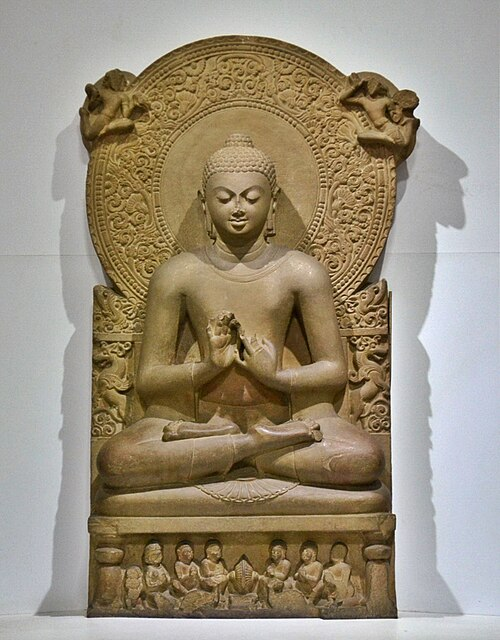
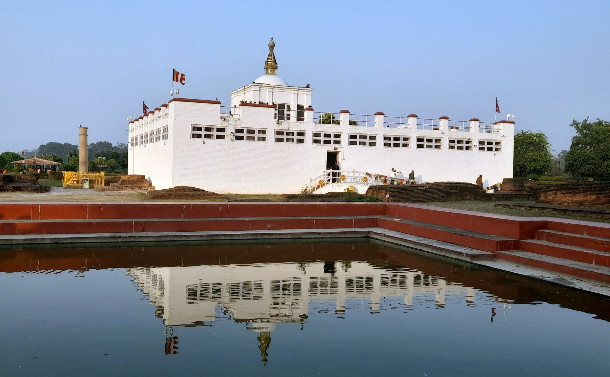
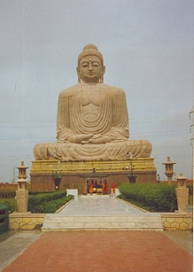
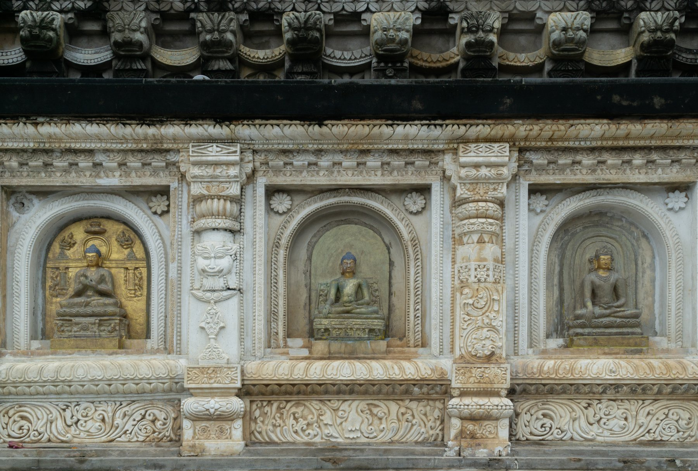
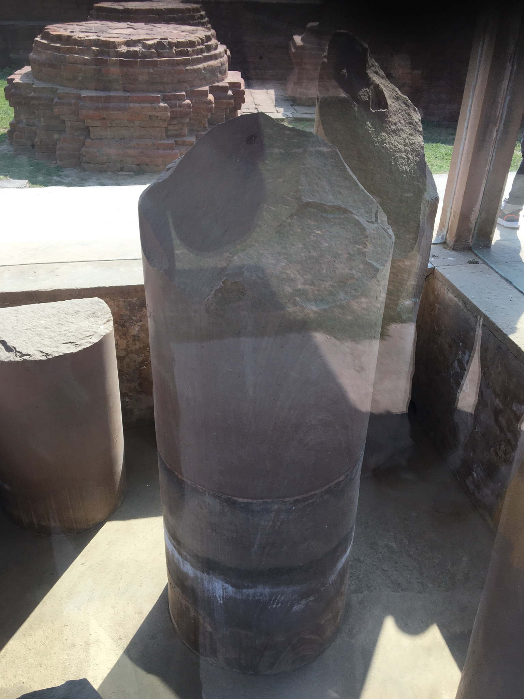
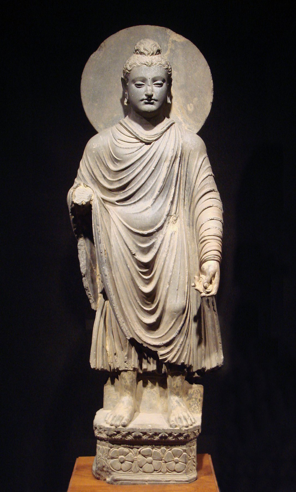
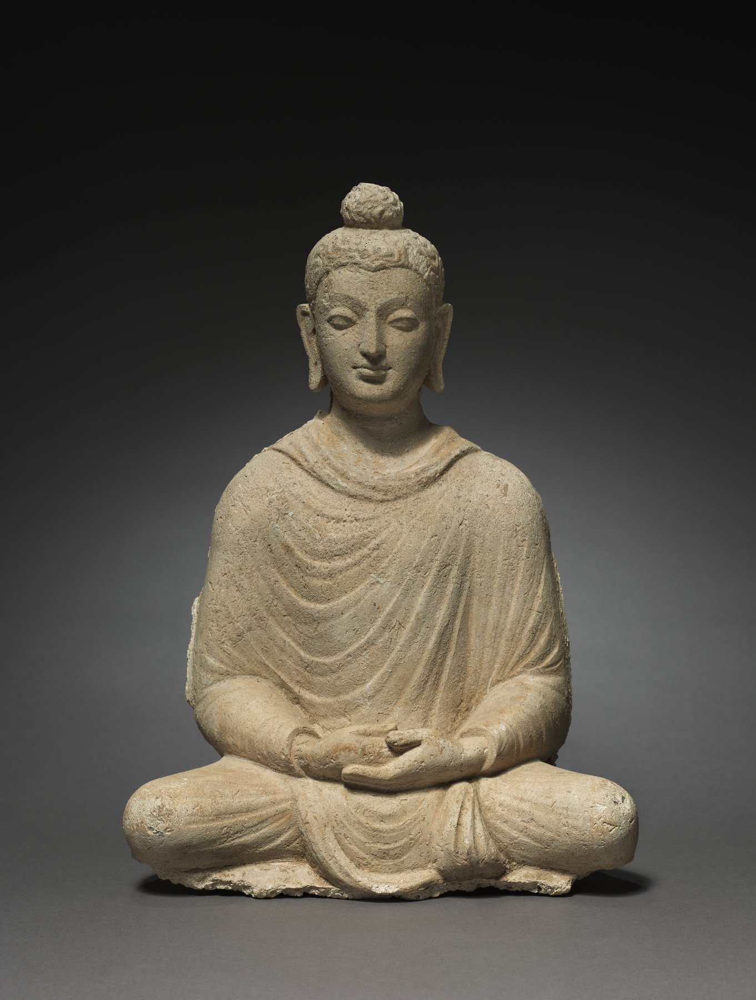
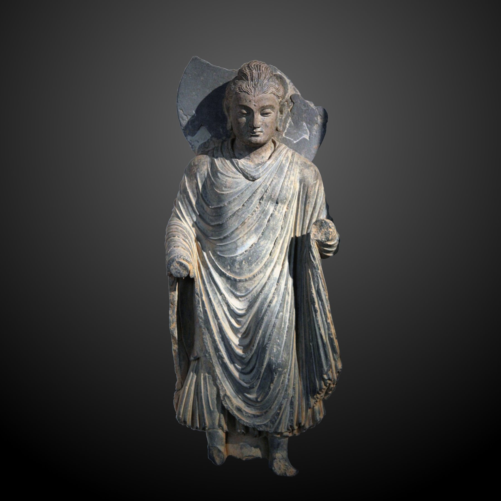
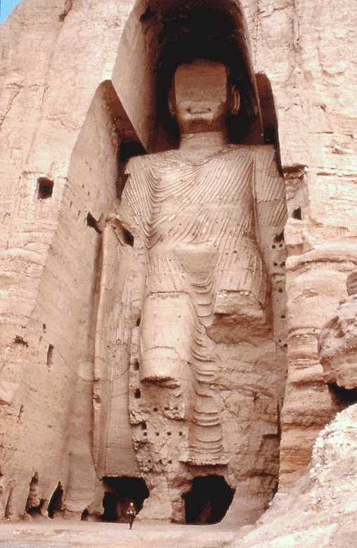

한 왕비가 친정으로 가는 길에 한 정원에서 길을 잠시 쉬었다. 그 정원의 한 나무 아래에서 한 아이가 태어났다. 그 아이가 평생 가지 정원을 떠나지 않은 한 사람이 된다.
기원전 563년 무렵, 히말라야 산기슭의 작은 부족 국가 카필라바스투에서 한 왕자가 태어났다. 아버지는 샤캬족의 우두머리 슛도다나, 어머니는 그의 아내 마야 부인이었다. 정확한 출생지는 카필라바스투가 아니라 그 인근의 작은 마을 룸비니다. 마야 부인이 출산을 위해 친정으로 가던 도중 길이 너무 길어, 룸비니 정원에서 잠시 쉬는 동안 산기가 와 무우수 가지 한 가지를 잡고 선 채로 출산했다 전한다.
아이의 이름은 싯다르타 고타마. 산스크리트로 시다르타는 목적을 이룬 자, 고타마는 가문의 성이다. 빨리어로는 싯닷타 고타마라 읽는다. 그러나 그 한 이름이 사실은 그의 인생에 가장 큰 아이러니로 남는다. 목적을 이룬 자라는 이름의 한 사람이 평생 한 가지를 묻기 위해 모든 것을 버린다. 후세 사람들은 그를 여러 이름으로 부른다. 깨달은 다음에는 붓다, 곧 깨어난 자라 불렸고, 자기 부족의 이름을 따 샤캬족의 성자라는 뜻의 석가모니라 불렸다. 동아시아에서는 그 석가모니를 한자로 옮겨 오늘 우리에게 익숙한 이름이 되었다. 한 사람이 이렇게 여러 이름으로 불린다는 것은 그만큼 여러 문명이 그를 자기 것으로 받아들였다는 뜻이기도 하다.
그가 태어난 정확한 해는 사실 아무도 모른다. 이것이 역사적 붓다를 다루는 첫 번째 어려움이다. 가장 널리 알려진 연대는 남방 상좌부 전통이 전하는 기원전 563년 출생, 기원전 483년 입멸이다. 그러나 20세기 후반 이후 서구와 일본의 불교학자들은 이 연대를 약 팔십 년 늦춰 잡는 수정설을 내놓았다. 부처의 입멸을 기원전 400년 무렵으로, 출생을 기원전 480년 무렵으로 보는 견해다. 그 근거는 아쇼카 대왕의 즉위 연대를 역산하는 방식이다. 두 학설은 지금도 결론이 나지 않았다. 이 페이지는 통용되는 남방 연대를 기본으로 쓰되, 학자들이 더 늦은 연대를 유력하게 본다는 사실을 함께 적어 둔다.
샤캬족이 어떤 부족이었는지도 한 가지 흥미로운 문제다. 후세 전승은 그를 강력한 왕국의 태자로 그린다. 그러나 역사학자들은 샤캬가 왕정 국가가 아니라 여러 귀족 가문이 회의를 통해 다스리던 공화정 부족 연맹이었다고 본다. 그 회의를 산스크리트로 가나상가라 부른다. 그렇다면 그의 아버지 슛도다나는 절대 군주가 아니라 그 회의에서 선출되거나 추대된 한 지도자, 곧 라자였을 가능성이 높다. 왕자가 궁궐을 떠난 이야기는 후세에 그 출가를 더 극적으로 만들기 위해 화려한 왕실의 색을 입은 것일 수 있다. 그러나 그가 부유한 귀족 가문에서 자라 부족함 없는 청년기를 보냈다는 사실 자체는 흔들리지 않는다.

좌선의 부처 · 굽타 왕조 5세기 사르나트 양식. 인도 사르나트 박물관 소장. 부처상의 표준 도상이 정착된 시기다. 출처: Wikimedia Commons (Buddha_in_Sarnath_Museum_(Dhammajak_Mutra).jpg)
곁가지 — 흰 코끼리의 꿈과 룸비니 발굴
전승에 의하면 마야 부인은 임신 직전 한 꿈을 꾸었다. 여섯 개의 어금니를 가진 흰 코끼리가 자기 옆구리로 들어오는 꿈이었다. 후세 인도 신화학자들은 이 꿈을 인드라 신 또는 비슈누 신의 화신이 인간으로 강생하는 표지로 해석한다. 1896년 독일 고고학자 알로이스 휘러가 룸비니에서 아쇼카 석주를 발견했다. 기원전 249년 마우리아 왕조의 아쇼카 대왕이 부처의 탄생지를 순례하고 세운 돌기둥이다. 그 비문에 또렷이 적혀 있다. 여기서 부처가 태어났다. 한 왕자의 탄생을 이백오십 년 뒤의 또 한 왕이 돌에 새겨 봉인한 셈이다.
[Lalitavistara Sūtra · UNESCO World Heritage, Lumbini 등재 자료]
인도
갠지스 평원에서 마가다 왕국과 코살라 왕국이 큰 두 강대국으로 자라고 있었다. 마가다의 빔비사라가 막 즉위한 무렵이다. 후일 그가 부처의 가장 큰 후원자가 된다.
중국
춘추시대. 노나라에서 한 어린아이가 자라고 있었다. 공자다. 그가 부처보다 약 십 년 늦게 태어난다. 동방과 서방에서 두 큰 스승이 한 세대 사이에 등장한다.
그리스
이오니아의 도시 밀레토스에서 탈레스가 만물의 근원이 무엇인가를 묻기 시작했다. 같은 시기 서쪽 끝에서도 한 사상의 새 길이 열리고 있었다.
페르시아
키루스 대왕의 할아버지 시기. 페르시아가 아직 메디아의 한 작은 속국이던 때다. 후일 그 작은 부족이 큰 제국을 세우게 된다.

마야 데비 사원 · 붓다 탄생지 · 네팔 룸비니 [Wikimedia · PD]
마야 부인은 아들을 낳은 지 이레 만에 세상을 떠났다. 그 어린아이는 어머니 얼굴을 한 번도 기억하지 못한 채 자랐다. 어머니의 자리를 대신한 사람은 마야 부인의 동생, 곧 이모인 마하파자파티였다. 그녀가 어린 싯다르타를 자기 아들처럼 길렀다. 한 가지 운명의 매듭이 여기서 미리 묶인다. 후일 그 마하파자파티가 부처에게 출가를 청하는 첫 번째 여성이 되고, 그 청이 받아들여져 인류 종교 역사상 최초의 여성 수도 공동체가 생긴다. 그를 길러 준 한 여인이 그의 가르침 안에서 한 새로운 길의 첫 사람이 되는 셈이다.
곁가지 2 — 일곱 걸음과 천상천하 유아독존
가장 유명한 탄생 신화가 하나 있다. 전승에 따르면 갓 태어난 아이가 곧바로 일곱 걸음을 걸었고, 걸음마다 그 발 아래에서 연꽃이 피어났다 한다. 그러더니 한 손으로 하늘을, 한 손으로 땅을 가리키며 한 마디를 했다고 한다. 하늘 위와 하늘 아래에 나 홀로 존귀하다. 한자로 천상천하 유아독존이다. 이 말은 한 개인의 오만한 선언이 아니라, 모든 생명이 저마다 그 자체로 존귀하다는 뜻으로 후세에 풀이된다. 역사학자들은 이 일화를 당연히 후대의 종교적 윤색으로 본다. 갓난아이가 걷고 말할 수는 없기 때문이다. 그러나 이 신화가 가리키는 것은 한 가지다. 한 인간이 그 자체로 깨달음의 씨앗을 품고 태어난다는 불교의 핵심 주장을, 후세 사람들이 탄생 장면에 미리 새겨 넣은 것이다.
한 작은 부족 공화국이 마가다와 코살라라는 두 강대국 사이에 끼여 있었다. 한 왕자가 떠난 그 땅은 한 세대 안에 큰 나라에 흡수되어 사라진다.
II
BC 555년경 · 카필라바스투
세 궁궐의 어린 시절
강의 듣기
아버지가 한 가지 예언에 두려워 어린 왕자에게 늙음과 병과 죽음을 보여주지 않으려 했다. 세 계절을 위한 세 궁궐을 지어 어린 아들을 그 안에 가두었다.
샤캬족이 살던 카필라바스투는 오늘날 어디인가. 이것도 한 가지 풀리지 않은 문제다. 인도 쪽 피프라와와 네팔 쪽 틸라우라코트, 두 유적지가 서로 자기가 옛 카필라바스투라 주장한다. 1898년 피프라와의 한 스투파에서 사리 항아리가 발굴되었는데, 그 항아리에 새겨진 옛 문자가 샤캬족이 부처의 사리를 모셨다는 내용으로 읽혀 큰 화제가 되었다. 진위를 둘러싼 논쟁이 백 년 넘게 이어지지만, 적어도 부처의 고향이 신화 속 장소가 아니라 갠지스 평원 북쪽 가장자리의 실재한 한 지역이었음은 분명하다. 신화의 안개 너머에 한 역사적 땅이 있다.
아이가 태어난 직후, 카필라바스투에 한 늙은 현자 아시타가 찾아왔다. 그가 갓난아이를 한 번 본 다음에 갑자기 울었다 한다. 아버지 슛도다나가 놀라 물었다. 무엇이 잘못되었습니까. 아시타가 답한다. "이 아이가 좋지 않은 일이 있어 우는 것이 아닙니다. 이 아이는 자라서 두 길 가운데 하나로 갈 것입니다. 왕이 되어 세상을 다스리거나, 모든 것을 버리고 출가하여 깨달음을 얻은 분이 될 것입니다. 그런데 제 나이가 너무 많아 그분의 가르침을 들을 만큼 살지 못하는 것이 슬퍼 웁니다."
아버지의 마음은 한 갈래로 결정되었다. 자기 아들이 왕이 되기를 바랐다. 출가자가 되지 않게 하기 위해 그가 한 가지를 계획한다. 어린 왕자에게 늙음과 병과 죽음과 출가자 이 네 가지를 평생 보여주지 않는다. 그러면 그가 인생의 비참을 모를 것이고, 모르는 것에 마음이 끌리지 않을 것이다.
그는 세 계절을 위한 세 궁궐을 지었다. 여름궁, 우기궁, 겨울궁. 각 궁궐에 가장 아름다운 정원과 가장 좋은 시녀들이 배치되었다. 어린 왕자는 평생 늙은 사람도, 병든 사람도, 죽은 사람도, 출가자도 한 번 보지 못한 채 자랐다. 궁궐 안의 모든 시녀와 신하는 늙기 전에 다른 곳으로 옮겨졌다. 정원의 시든 꽃조차 밤사이에 정원사가 새 꽃으로 갈아 놓았다.
그러나 한 사람을 보호하기 위해 한 세계를 가짜로 만들어야 하는 일은 결국 그 보호 자체를 가짜로 만든다. 어린 왕자는 자기 둘레의 세상이 너무 완벽한 것을 점차 이상하게 느끼기 시작했다. 무엇인가가 빠져 있다는 한 가지 감각이 그의 안에서 자랐다.
그렇다고 그의 어린 시절이 불행하기만 한 것은 아니었다. 후세 경전은 오히려 그가 누린 풍요를 자세히 적는다. 그는 가장 고운 베나레스 비단으로 지은 옷만 입었고, 머리 위에는 늘 흰 양산이 받쳐졌으며, 연못 세 곳에 각각 푸른 연꽃, 흰 연꽃, 붉은 연꽃이 그를 위해 피었다고 한다. 부처가 된 다음 그는 제자들에게 자기 어린 시절을 이렇게 돌아보았다. 나는 그토록 섬세하게, 그토록 지나치게 곱게 자랐다고. 흥미로운 것은 부처가 이 풍요를 자랑이 아니라 한 가지 교훈으로 들었다는 점이다. 그 모든 풍요 한가운데에서도 한 가지 질문이 그를 떠나지 않았다는 것, 그것이 그가 말하고 싶었던 핵심이다.
그가 받은 교육도 한 부족 지도자의 아들답게 충실했다. 무예와 활쏘기, 수레 다루기, 그리고 그 시대 귀족이 익혀야 할 여러 학문을 배웠다. 한 전승은 그가 학당에서 글과 수학을 배울 때 스승이 가르칠 것이 없을 만큼 빠르게 익혔다고 전한다. 또 한 전승은 그가 어느 날 농경제에 따라간 자리에서 한 가지 깊은 체험을 했다고 적는다. 농부가 쟁기로 흙을 가르자 흙 속에서 벌레들이 드러났고, 그 벌레를 새들이 쪼아 먹었다. 한 생명이 다른 생명을 먹어야 사는 세상의 한 단면을 본 어린 그가 나무 그늘에 홀로 앉아 처음으로 깊은 명상에 들었다 한다. 이 농경제의 명상은 후일 그가 보리수 아래에서 들어갈 그 선정의 첫 예고편으로 읽힌다.
곁가지 1 — 사촌 데바닷타와 학
어린 시절의 한 일화가 후세 전승에 자주 나온다. 한 마리 학이 하늘에서 떨어졌다. 화살이 그 학의 날개에 박혀 있었다. 그 화살을 쏜 사람은 그의 사촌 데바닷타였다. 학은 싯다르타의 발 앞에 떨어졌다. 데바닷타가 와서 그 학을 가져가려 했다. 싯다르타가 거절했다. 사촌이 분노했다. 내 화살로 떨어뜨린 학이다. 어린 왕자가 답한다. 한 생명을 죽이려 한 자보다 한 생명을 살리려 한 자가 그 생명의 주인이다. 부족 회의가 어린 왕자의 손을 들어주었다. 이 한 사건이 후일 그의 사촌이 평생 그를 미워하는 한 가지 작은 씨앗이 된다. 후일 그 데바닷타가 부처의 가장 큰 적이 된다.
[Source] 자타카 본생담 서문 · 아슈바고샤 『붓다차리타』 2장 · H. W. Schumann, The Historical Buddha.
곁가지 2 — 아내 야쇼다라와 무예 시합
한 전승은 그가 아내 야쇼다라를 얻은 과정을 한 편의 무예 시합으로 그린다. 샤캬족의 풍습에 따르면 신붓감을 두고 여러 청년이 활쏘기와 검술과 수레 경주로 겨루어야 했다. 싯다르타가 다른 청년들이 다루지 못하던 한 옛 활을 당겨 가장 먼 과녁을 꿰뚫었다고 한다. 그 활시위 소리가 온 도성에 울렸다는 과장된 묘사까지 붙는다. 물론 이 시합 이야기 역시 후대의 윤색일 가능성이 크다. 그러나 한 가지 사실은 분명하다. 출가 이전의 싯다르타는 책상물림의 약한 청년이 아니라, 그 시대 무인 귀족의 훈련을 충실히 받은 건장한 청년이었다. 그가 육 년의 극한 고행을 버틴 체력의 바탕에는 이 청년기의 단련이 있었을 것이다.
[Source] 라리타비스타라 12~13장 · 니다나카타 · 大正新脩大藏經 본생부 전승.
인도
마가다의 빔비사라가 라자그리하에 새 수도를 건설하고 있었다. 카필라바스투는 그 큰 마가다 옆의 작은 부족 공화국이었다. 결국 후일 코살라에 흡수된다.
중국
춘추시대 패자 정치. 다섯 패자의 시대가 끝나가고 있었다. 그 다음에 전국시대가 온다. 노나라의 한 청년 공자가 예와 악을 익히며 자라고 있었다.
그리스
아테네에서 참주 페이시스트라토스가 권력을 쥐고 있었다. 한 도시 국가가 민주정으로 가는 길의 진통을 겪던 시기다.
III
BC 547년경 · 카필라바스투 성 밖
네 문 밖의 네 광경
강의 듣기
어느 봄날, 청년이 된 왕자가 마부를 데리고 성 밖을 처음 나갔다. 그가 평생 본 적 없는 네 가지를 차례로 만난다.
청년 싯다르타는 열여섯에 사촌 야쇼다라와 결혼했다. 십이 년 뒤 아들 라훌라가 태어난다. 그 무렵 그가 처음으로 성 밖을 나가 본다. 마부 찬다카가 마차를 몰았다.
전승에 따르면 그가 네 번의 외출에서 네 가지를 차례로 만난다. 첫 번째 외출에서 길가에 등이 굽고 이가 빠진 늙은 사람을 보았다. 그가 마부에게 묻는다. 저 사람은 누구냐. 마부가 답한다. 늙은 사람입니다. 그가 다시 묻는다. 늙음이 무엇이냐. 마부가 답한다. 누구든 시간이 지나면 그렇게 됩니다. 청년이 충격을 받는다. 나도 그렇게 되느냐. 마부가 답한다. 그렇습니다, 왕자님도 예외가 아닙니다.
두 번째 외출에서 그가 길가에 누워 신음하는 병든 사람을 보았다. 세 번째 외출에서 가족이 통곡하며 들고 가는 시체를 보았다. 세 번에 걸쳐 그는 인생의 세 가지 큰 비참을 처음으로 만난다. 그가 궁궐로 돌아와 잠을 이루지 못한다. 자기를 둘러싼 모든 아름다움이 결국 늙음과 병과 죽음으로 끝난다는 사실이 그를 사로잡았다.
네 번째 외출에서 그가 한 출가자를 보았다. 누런 가사를 두르고 한 그릇의 음식을 받기 위해 묵묵히 걸어가는 한 사람이었다. 마부에게 묻는다. 저 사람은 누구냐. 마부가 답한다. 출가자입니다. 모든 것을 버리고 깨달음을 구하는 사람입니다. 청년의 마음에 그 한 모습이 깊이 새겨졌다. 처음으로 그는 인생의 세 가지 비참 너머에 한 가지 다른 길이 있을 수도 있음을 보았다.
같은 무렵 한 사건이 그의 마음을 더 무겁게 했다. 궁궐에서 아들 라훌라가 태어났다는 소식이 전해진 것이다. 보통의 아버지라면 기뻐할 소식이었으나 그는 한 마디를 했다 전한다. 라훌라가 태어났다, 한 속박이 생겼다. 새 생명의 탄생조차 그에게는 자기를 궁궐에 더 단단히 묶는 한 가닥 사슬로 느껴졌다. 늙음과 병과 죽음의 충격에 더해, 사랑하는 것이 늘어날수록 잃을 것도 늘어난다는 또 하나의 무게가 그를 눌렀다. 이 모순, 곧 가장 사랑하는 것이 동시에 가장 큰 괴로움의 씨앗이 된다는 통찰이, 후일 그가 가르치는 집착과 괴로움의 관계로 자라난다.
이 네 광경, 곧 늙음과 병과 죽음과 출가자를 후세 사람들은 사문유관이라 부른다. 성의 네 문 밖에서 본 네 광경이라는 뜻이다. 이 사문유관이 가르치는 것은 한 가지 단순하면서도 무서운 사실이다. 늙음과 병과 죽음은 누구도 피하지 못한다. 왕자라 해서, 부자라 해서, 젊고 건강하다 해서 예외가 아니다. 싯다르타가 충격을 받은 것은 늙음과 병과 죽음 그 자체보다, 그 셋이 자기에게도 똑같이 닥친다는 사실을 처음으로 자기 일로 받아들인 순간이었다. 사람은 누구나 죽음을 머리로는 알지만 가슴으로는 남의 일로 미뤄 둔다. 그가 그 미룸의 장막을 한 번 걷어 올린 것이다.
주목할 것은 네 광경의 마지막이 절망이 아니라 한 출가자였다는 점이다. 만일 그가 늙음과 병과 죽음만 보았다면 그는 절망에 빠졌을 것이다. 그러나 네 번째에서 그는 그 모든 비참을 넘어서려고 길을 떠난 한 사람을 보았다. 곧 비참을 직면하되 그 앞에서 무너지지 않고 답을 찾아 떠나는 한 길이 있다는 것이다. 불교가 비관의 종교가 아니라 길을 제시하는 종교라는 점이, 이 네 광경의 순서 안에 이미 들어 있다. 첫 세 광경이 문제이고, 네 번째 광경이 그 문제를 풀러 가는 한 사람의 뒷모습이었다.
젊음의 자만, 건강의 자만, 목숨의 자만. 배우지 못한 보통 사람은 이 세 가지 자만에 취해 산다. 나도 늙는 존재이면서 늙은 이를 보고 괴로워하고 부끄러워한다. 그것을 보고 나의 젊음의 자만이 모두 사라졌다.
증지부 경전(Aṅguttara Nikāya 3.39), 수쿠말라 숫타
곁가지 1 — 네 문의 신화와 실제
이 네 문 이야기가 사실인가에 대해 학자들이 의문을 표한다. 그 시대 인도 왕가 청년이 늙음과 병과 죽음을 정말 한 번도 본 적 없을 수가 없다는 것이다. 따라서 이 이야기는 후세 전승이 한 깨달음의 출발점을 극적으로 그리기 위해 만든 상징이라 본다. 그러나 그 상징이 가리키는 진실은 변하지 않는다. 한 사람의 인생이 평소에는 안 보이던 한 가지 큰 진실을 어느 한 순간 갑자기 마주치는 일이 있다. 그 마주침이 한 사람의 인생을 다른 길로 돌려놓는다.
[Source] 아슈바고샤 『붓다차리타』 3장 · 라리타비스타라 · Bhikkhu Ñāṇamoli, The Life of the Buddha (1972).
곁가지 2 — 사문 운동, 한 시대의 출가 열풍
싯다르타의 출가는 그 한 사람만의 별난 결심이 아니었다. 기원전 6세기에서 5세기의 갠지스 평원은 거대한 정신적 격변기였다. 철기가 보급되고 농업 생산이 늘면서 도시가 커지고 상인 계급이 성장했다. 옛 부족 질서가 무너지고 새 왕국이 일어났다. 이런 격동 속에서 베다 종교와 바라문 사제 계급의 권위를 의심하는 새로운 구도자 무리가 곳곳에 나타났다. 이들을 사문, 곧 슈라마나라 불렀다. 집과 재산을 버리고 숲으로 들어가 스스로 진리를 찾는 사람들이었다. 자이나교를 일으킨 마하비라, 운명론을 가르친 막칼리 고살라, 도덕을 부정한 푸라나 캇사파 등 후세에 이름이 전하는 여섯 명의 큰 사문이 모두 같은 시대 사람이다. 싯다르타는 그 거대한 흐름 한가운데로 걸어 들어간 한 청년이었다. 다만 그가 결국 그 모든 길을 넘어서 자기만의 한 길을 열었다는 점이 다를 뿐이다.
[Source] Sāmaññaphala Sutta(Dīgha Nikāya 2) 육사외도 기록 · Richard Gombrich, Theravada Buddhism.
인도
같은 시기 인도 전역에서 사문 운동이 활발했다. 정통 베다 종교의 권위에 도전하는 새 출가자 집단이 곳곳에서 일어났다. 자이나교의 마하비라도 같은 세기 사람이다. 한 청년의 출가 결심은 그 시대 큰 흐름의 한 부분이었다.
중국
같은 무렵 중국에서도 공자가 노나라를 떠나 여러 나라를 떠돌며 자기를 받아 줄 군주를 찾고 있었다. 동방의 한 스승은 세상 속으로 들어가 세상을 고치려 했고, 인도의 한 청년은 세상을 떠나 마음을 고치려 했다.
IV
BC 534년경 · 카필라바스투 한밤
한밤의 출가
강의 듣기
스물아홉의 한밤, 그가 잠든 아내와 갓 태어난 아들을 마지막으로 들여다보고 궁궐을 떠났다. 한 사람이 모든 것을 버리는 일이 그 한 밤에 결정되었다.
싯다르타가 스물아홉이 되던 해에 한 가지 결심이 굳어졌다. 그가 한 한밤을 골라 출가를 결행한다. 그날 아내 야쇼다라가 갓난아이 라훌라를 안고 잠든 모습을 그가 마지막으로 들여다보았다 한다. 아이의 이름이 라훌라인 이유가 흥미롭다. 라훌라는 산스크리트로 장애라는 뜻이다. 한 아이가 태어났다는 소식을 들은 그가 한 마디 했다 한다. 라훌라가 태어났다, 즉 한 장애가 태어났다. 출가의 마지막 한 가지 끈이 그 아이였기 때문이다.
한밤에 그가 마부 찬다카를 깨워 자기 백마 칸타카를 끌어내게 했다. 두 사람이 조용히 궁궐을 빠져나가 강을 건넜다. 강을 건넌 그가 칼로 자기 긴 머리카락을 잘랐다. 왕자의 화려한 옷을 벗고 한 가난한 사냥꾼과 옷을 바꾸어 입었다. 그러더니 마부에게 명령한다. 백마와 함께 궁궐로 돌아가라. 그리고 내가 출가했음을 아버지에게 전하라.
마부가 울었다. 백마 칸타카도 울었다 한다. 사료에 따르면 칸타카는 그 출가 길에서 돌아온 직후 슬픔에 잠겨 곡식을 끊고 죽었다고 한다. 후세 사람들이 그 백마의 한 가지 충성심을 두고두고 이야기했다.
여기서 한 가지 큰 질문이 있다. 한 사람이 모든 것을 버린다는 것이 무엇인가. 그가 버린 것은 왕자의 자리만이 아니다. 잠든 아내와 갓난아들, 늙은 아버지와 사촌과 친구, 평생 자기를 떠받쳐 온 한 작은 부족 전체이다. 한 사람의 출가가 그 한 사람의 일이 아니라 그 사람을 둘러싼 모든 사람의 인생에 한 가지 큰 그늘을 남긴다. 후일 그 야쇼다라가 어떻게 살았는지에 대한 사료는 부족하다. 그러나 그녀가 평생 그 한 밤을 잊지 않았으리라는 사실은 분명하다.
경전은 이 출가를 한 가지 더 깊은 차원에서 설명한다. 부처가 후일 제자들에게 그 밤을 돌아보며 말하기를, 자기는 늙음과 병과 죽음에 묶인 존재이면서 또한 늙고 병들고 죽는 것을 좇아 살아가는 자신을 보았다고 했다. 그는 묻는다. 나는 왜 스스로 늙음과 병과 죽음에 묶이면서도, 그 묶임에서 벗어난 자리, 곧 늙지도 병들지도 죽지도 않는 더없는 평안을 구하지 않는가. 이것이 그의 출가를 이끈 진짜 동기였다. 그것은 인생이 싫어서 도망친 것이 아니라, 인생의 가장 깊은 문제를 정면으로 풀기 위해 가장 편한 자리를 스스로 버린 한 선택이었다.
한밤에 궁궐을 빠져나오기 전, 그가 마지막으로 아내와 아들의 방문 앞에 섰다는 장면이 여러 불전에 그려진다. 그는 문을 열고 들어가 아이를 한 번 안아 보고 싶었으나, 야쇼다라의 팔이 아이의 얼굴을 덮고 있어 아이를 안으려면 아내를 깨워야 했다. 그가 망설이다 돌아선다. 깨달음을 얻은 다음 돌아와 안으리라. 한 번의 포옹을 미룬 그 망설임의 장면이, 모든 것을 버린 한 사람도 끝내 버리지 못한 한 가닥 정을 보여 준다. 실제로 그는 깨달음을 얻은 뒤 고향으로 돌아와 아들 라훌라를 만나고, 그 아들을 자기 제자로 받는다. 미룬 포옹을 그는 끝내 지킨 셈이다.
집에서 사는 삶은 비좁고 먼지 가득한 길이지만, 집을 떠난 삶은 넓은 하늘과 같다. 집에 머물면서 완전하고 청정한 거룩한 삶을 살기란 쉽지 않다. 차라리 나는 머리와 수염을 깎고 가사를 두르고 집 없는 곳으로 나아가리라.
중부 경전(Majjhima Nikāya 36), 마하사짜카 숫타
곁가지 1 — 백마 칸타카와 마부 찬다카의 뒷이야기
출가 길의 두 동반자, 백마 칸타카와 마부 찬다카의 운명이 후세 전승에서 엇갈린다. 백마는 주인을 돌려보낸 뒤 슬픔으로 곡기를 끊고 죽어, 다음 생에 천신으로 태어났다는 신화가 붙는다. 마부 찬다카는 더 복잡한 길을 걷는다. 그는 부처가 깨달은 뒤 출가해 비구가 되지만, 자기가 한때 부처를 모시던 마부였다는 자부심을 버리지 못해 다른 비구들과 자주 다투었다. 부처는 입멸 직전 아난다에게 한 가지 마지막 명령을 남긴다. 찬다카에게는 '브라흐마단다', 곧 가장 무거운 침묵의 벌을 내리라는 것이었다. 아무도 그와 말을 섞지 말라는 벌이다. 그 벌을 받은 찬다카가 비로소 크게 뉘우치고 정진해 깨달음을 얻었다 한다. 한 사람의 자만을 꺾은 것이 매가 아니라 침묵이었다는 점이 인상 깊다.
같은 시기 갠지스 평원에서 마하비라가 출가했다. 그가 싯다르타와 거의 같은 한 시기의 사람이다. 두 큰 사문이 같은 한 시기에 같은 평원에서 거의 같은 길을 갔다. 두 사람이 만난 일은 없다.
그리스
아테네에서 솔론의 개혁이 한창이었다. 한 도시의 정치 개혁과 한 부족 왕자의 출가가 거의 같은 한 시기에 동방과 서방에서 진행되고 있었다.
페르시아
아케메네스 제국이 다리우스 1세 아래에서 인더스강 유역까지 뻗어 있었다. 그 제국의 동쪽 끝 간다라가 인도 세계와 맞닿아, 후일 부처상이 그리스풍으로 빚어지는 문화의 통로가 된다.
Tabula II · 출가 · 수행 · 성도
카필라바스투에서 라자그리하, 우루벨라, 보드가야로 (BC 534~528경)
고향 샤캬 마가다 왕국 출가·구도의 행로 고행 (우루벨라)
고향을 떠난 청년은 남쪽 마가다로 내려가 두 스승을 거치고, 우루벨라의 숲에서 육 년을 굶주리다, 끝내 보드가야의 한 나무 아래에서 답을 얻는다.
V
BC 533-528년경 · 갠지스 평원
두 스승과 고행 육 년
강의 듣기
출가한 청년이 처음 한 일은 가르침을 찾는 일이었다. 그가 만난 두 스승의 가르침을 빠르게 익혔으나 거기서 답을 찾지 못했다.
출가한 싯다르타가 갠지스 평원을 남쪽으로 내려와 그 시대 가장 유명한 두 명상 스승을 차례로 만난다. 첫 번째 스승은 알라라 칼라마다. 그가 가르치는 것은 무소유처정이라는 깊은 명상의 한 경지였다. 싯다르타가 그 가르침을 매우 빠르게 익혔다. 스승이 그를 평등한 동료로 받아주고 자기 학파의 공동 지도자가 되어 달라 청했다. 그러나 싯다르타가 거절한다. 이 명상이 마음의 한 평온은 주지만, 늙음과 병과 죽음의 뿌리를 끊지는 못합니다. 저는 다음 길을 찾아 떠나겠습니다.
두 번째 스승은 웃다카 라마풋타다. 그가 가르치는 것은 비상비비상처정이라는 더 깊은 명상의 한 경지였다. 싯다르타가 다시 그 가르침을 매우 빠르게 익혔다. 스승이 그에게 자기 학파의 우두머리 자리를 제안했다. 그가 또 거절한다. 같은 이유였다.
두 스승에 대한 이 일화는 역사적으로 매우 중요하다. 후세 신화가 부처를 처음부터 모든 것을 아는 초월적 존재로 그리려는 경향이 있는데, 이 대목만은 정반대다. 부처가 한때 다른 스승에게 배웠고, 그 가르침을 익혔으나 만족하지 못해 떠났다는 사실을, 불교 전통 스스로가 가장 오래된 경전에 그대로 남겨 두었다. 이는 그만큼 신빙성이 높은 기록으로 평가된다. 무소유처정과 비상비비상처정이라는 두 깊은 선정의 경지는 후일 불교의 명상 체계 안에 그대로 흡수된다. 다만 부처는 그것이 마음을 잠시 고요하게 할 뿐 괴로움의 뿌리를 끊지는 못한다고 보았다. 평온과 해탈은 다른 것이라는 이 통찰이, 그를 또 한 번 길 위에 세웠다.
두 스승의 가르침으로 답을 찾지 못한 그는 다섯 명의 동료 출가자와 함께 우루벨라 숲에 들어가 극단의 고행을 시작한다. 그가 한 고행은 사료에 따르면 다음과 같다. 하루에 쌀 한 톨로 살았다 한다. 그러더니 곡식을 완전히 끊었다. 호흡을 한 시간씩 멈추었다. 햇볕 아래에서 한 자리에 며칠씩 앉아 있었다. 그의 몸이 점점 야위어 갈비뼈가 등의 가죽에 닿을 정도가 되었다. 그러나 그는 깨달음의 한 가지 빛도 보지 못했다.
유명한 한 마디가 사료에 전한다. 그가 자기 팔을 만져 보았다. 한때 청년의 강한 팔이 이제 마른 갈대 같았다. 그가 자기에게 묻는다. 이 몸이 이렇게 무너졌는데도 깨달음은 보이지 않는다. 이 길이 옳은 길인가. 그가 처음으로 한 가지 의심을 품는다.
부처가 된 다음 그는 이 고행의 시절을 매우 구체적으로 회고했다. 음식을 끊으니 팔다리가 마른 덩굴의 마디처럼 되었고, 엉덩이는 낙타의 발굽 같았으며, 등뼈는 한 줄의 구슬을 꿴 것 같았고, 갈비뼈는 낡은 헛간의 서까래처럼 드러났다고 했다. 뱃가죽을 만지면 등뼈가 잡히고 등뼈를 만지면 뱃가죽이 잡혔다고 했다. 그가 일어서려다 그대로 고꾸라졌고, 손으로 몸을 문지르자 썩은 뿌리 같은 털이 우수수 빠졌다고 했다. 이 처절한 자기 묘사는 후세의 미화가 아니라, 가장 오래된 경전 가운데 하나에 그대로 남아 있는 부처 자신의 말이다. 그만큼 그는 고행을 끝까지, 인간이 갈 수 있는 극한까지 밀어붙인 사람이었다.
그러나 바로 그 극한이 그에게 한 가지를 가르쳤다. 몸을 학대하는 것으로는 마음의 자유에 이르지 못한다는 사실이다. 이 깨달음이 중요한 까닭은, 그가 고행을 게을러서 포기한 것이 아니기 때문이다. 그는 누구보다 철저히 고행을 해 본 다음, 그 길의 끝에서 그 길이 막다른 골목임을 스스로 확인했다. 풍요의 길도 가 보았고 고행의 길도 끝까지 가 보았다. 두 극단을 모두 직접 겪은 사람만이 그 사이의 길을 발견할 자격이 있다. 그가 곧 발견할 중도는, 어느 쪽도 가 보지 않은 사람의 적당한 타협이 아니라, 양쪽 끝을 다 가 본 사람의 깊은 결론이었다.
이 극심한 고행으로도 나는 인간을 넘어선 거룩한 지혜와 통찰에 이르지 못했다. 깨달음에 이르는 길은 따로 있는 것이 아닐까. 그때 나는 기억했다. 어린 시절 나무 그늘에 앉아 들었던 그 고요한 첫 번째 선정을.
중부 경전(Majjhima Nikāya 36), 마하사짜카 숫타
곁가지 1 — 간다라 미술의 고행상
이 시기 부처의 모습이 후일 간다라 미술의 한 가지 표준 도상으로 자리 잡는다. 갈비뼈가 두드러지고 두 눈만 살아 있는 깡마른 좌상이다. 가장 유명한 것이 파키스탄 라호르 박물관의 고행상이다. 1세기 헬레니즘 영향이 짙은 양식이다. 한 사문의 극한이 한 조각가의 손에서 천 년을 건너 우리에게까지 온다.
[Source] 라호르 박물관 「고행하는 붓다」(쿠샨 2~3세기) · British Museum, Gandhāra Sculpture collection.
곁가지 2 — 빔비사라 왕의 첫 제안
출가 직후, 아직 깨달음을 얻기 전의 싯다르타가 라자그리하의 거리에서 탁발하던 모습을 마가다 왕 빔비사라가 궁의 누각에서 내려다보았다는 일화가 전한다. 한 출가자의 걸음걸이와 기품이 예사롭지 않음을 본 왕이 사람을 보내 그를 찾고, 직접 만나 한 가지를 제안했다. 군대의 절반과 영토를 줄 테니 출가를 그만두고 자기와 함께 나라를 다스리자는 것이었다. 싯다르타가 정중히 거절한다. 자기는 감각의 욕망에서 벗어나기 위해 떠난 사람이니 왕국이 무슨 소용이겠느냐는 것이었다. 다만 그는 한 가지를 약속한다. 깨달음을 얻으면 가장 먼저 당신을 찾아와 그 진리를 전하겠다고. 그리고 실제로 부처가 된 뒤 그는 그 약속을 지켜 라자그리하로 돌아왔고, 빔비사라는 평생 부처의 가장 큰 후원자가 되어 최초의 사원 죽림정사를 기증한다. 한 출가자의 거절이 한 왕국 전체를 불교의 첫 거점으로 바꾼 셈이다.
마가다의 빔비사라가 정식 즉위해 라자그리하를 새 수도로 다지고 있었다. 같은 시기 코살라가 카필라바스투를 압박해 가고 있었다. 한 사람의 고향이 정치적으로 흔들리던 시기에 그 사람은 산속에서 답을 찾고 있었다.
중국
춘추시대 말기. 노자가 활동하던 시기로 추정한다. 두 큰 사상 동방과 서방의 답이 같은 시기에 끓어오르고 있었다.
그리스
남이탈리아에서 피타고라스 학파가 금욕과 절제로 영혼을 정화하면 윤회의 사슬에서 벗어난다고 가르쳤다. 동방의 사문과 묘하게 닮은 사상이 지중해 끝에서도 자라고 있었다.
VI
BC 528년경 · 우루벨라 네란자라 강가
우유 한 그릇과 중도
강의 듣기
한 마을 처녀가 강가의 한 야윈 사문에게 우유죽 한 그릇을 바쳤다. 그 한 그릇이 깨달음의 길을 바꾼다.
육 년의 고행 끝에 싯다르타는 거의 죽음에 가까웠다. 한 사료에 따르면 그가 명상 중에 잠시 쓰러져 의식을 잃었다 한다. 다섯 동료가 그를 죽은 것이라 여기고 잠시 흔들었다. 그가 다시 깨어났다.
그가 한 가지 큰 결심을 한다. 이 고행의 길이 깨달음으로 가지 않는다. 너무 풍요한 궁궐의 길도 깨달음으로 가지 않았다. 두 극단이 모두 답이 아니라면, 그 사이의 한 길이 있어야 한다. 그가 후일 중도라 부르게 되는 한 가지 길이다.
그가 자리에서 일어나 네란자라 강에서 몸을 씻었다. 그 무렵 강가의 한 마을에서 수자타라는 처녀가 우유죽 한 그릇을 들고 강가에 왔다. 사료에 따르면 그녀는 자기 마음의 한 가지 소원을 비는 의식으로 강의 신께 우유죽을 바치러 온 것이었다. 그러다가 강가에 야윈 한 사문이 앉아 있는 것을 보았다. 그녀가 그 우유죽 그릇을 사문에게 바쳤다.
싯다르타가 그 우유죽을 받아 먹었다. 다섯 동료가 충격을 받았다. 그가 고행을 포기했다고 본 것이다. 그들이 화를 내며 자리를 떠 사르나트로 갔다. 싯다르타가 혼자 남았다.
다섯 동료가 떠난 일은 그에게 한 가지 시련이었다. 육 년을 함께 굶주린 벗들이 그를 변절자로 여기고 등을 돌렸다. 그러나 그는 흔들리지 않았다. 진리를 찾는 일은 다수의 동의로 정해지는 것이 아니라, 옳은 길을 홀로라도 끝까지 걷는 데 있음을 그는 이미 알고 있었다. 군중과 함께 막다른 골목으로 가느니 홀로 옳은 길을 가겠다는 그 고독한 결단이, 곧이어 일어날 깨달음의 전제 조건이었다.
혼자 남은 그가 우유죽으로 기력을 회복한 다음, 보드가야 마을 근처의 한 보리수 아래로 가서 자리를 잡았다. 그가 그 자리에서 한 결심을 한다. 깨달음을 얻지 못하면 이 자리에서 일어나지 않으리라. 이 보리수는 본디 핍팔라 나무라 불리던 평범한 무화과나무의 일종이었다. 한 사람이 그 아래에서 깨달은 뒤로 그 나무는 깨달음의 나무, 곧 보리수라 불리게 된다. 한 그루의 흔한 나무가 한 사람의 깨달음으로 인류의 한 성스러운 상징이 된 것이다.
여기서 태어난 한 가지 사상이 불교의 가장 깊은 뿌리가 된다. 중도다. 중도는 단순히 두 극단의 산술적 가운데가 아니다. 욕망에 빠지는 길과 자기를 학대하는 길, 그 둘이 모두 한 가지 공통점을 가진다는 통찰이다. 두 길 모두 결국 '나'라는 것에 사로잡혀 있다는 것이다. 쾌락은 나를 만족시키려 하고, 고행은 나를 정복하려 한다. 둘 다 '나'를 중심에 둔다. 중도는 그 '나'에 대한 집착 자체를 내려놓는 제3의 길이다. 그래서 중도는 양극단의 절충이 아니라 차원이 다른 한 길이며, 후일 그가 가르치는 무아와 연기의 사상으로 곧장 이어진다.
비구들이여, 출가한 사람이 가까이해서는 안 될 두 극단이 있다. 하나는 감각적 쾌락에 빠지는 것이니 저열하고 무익하다. 다른 하나는 스스로를 괴롭히는 고행이니 괴롭고 무익하다. 여래는 이 두 극단을 버리고 중도를 깨달았다. 그것은 눈을 뜨게 하고 지혜를 주며 평안과 깨달음과 열반으로 이끈다.
상응부 경전(Saṃyutta Nikāya 56.11), 초전법륜경
중도와 두 극단
쾌락의 길감각적 욕망에 탐닉 · 궁궐의 삶 · 저열하고 무익
고행의 길몸을 학대하는 극단 · 우루벨라 육 년 · 괴롭고 무익
중도두 극단을 모두 버린 제3의 길 · 팔정도로 구체화
핵심'나'에 대한 집착을 내려놓음 → 무아·연기로 이어짐
곁가지 1 — 수자타의 그릇과 황금 의식
수자타가 바친 우유죽 그릇 자체가 한 가지 흥미로운 전승의 주인공이 된다. 우유죽을 다 먹은 부처가 그 그릇을 강물에 던졌다 한다. 그 그릇이 강물을 거슬러 올라가다 가라앉아 옛 부처들이 던진 그릇과 함께 강의 깊은 곳에 가라앉았다는 신화가 있다. 한 사람의 깨달음이 한 처녀의 작은 손에서 시작되었다는 한 가지 상징적 장면이 후세 인도 미술과 동아시아 불화에 자주 등장한다.
중도를 설명하는 가장 아름다운 비유가 후세에 전한다. 부처가 한때 음악가였던 한 제자 소나에게 물었다고 한다. 비파의 줄을 너무 팽팽하게 조이면 소리가 어떠하냐. 소나가 답한다. 끊어지거나 거친 소리가 납니다. 너무 느슨하게 풀면 어떠하냐. 소리가 나지 않습니다. 그러면 어떻게 해야 하느냐. 너무 팽팽하지도 너무 느슨하지도 않게, 알맞게 조여야 가장 고운 소리가 납니다. 부처가 말한다. 수행도 그와 같다. 너무 다그치면 들뜨고, 너무 풀면 게을러진다. 알맞은 자리를 찾아야 한다. 한 음악가의 경험을 빌려 깨달음의 길을 설명한 이 비유가, 고행을 막 버린 부처의 중도 사상을 가장 쉽게 전한다.
다섯 동료가 사르나트로 가던 그 시기는 인도 평원 전체가 사문 운동의 정점에 있던 시기다. 곳곳에서 새 출가자 집단이 만들어지고, 옛 베다 종교의 권위가 흔들리고 있었다.
중국
같은 무렵 공자가 중용을 말했다. 지나침과 모자람의 어느 쪽으로도 치우치지 않는 자리가 가장 바른 자리라는 사상이다. 동방과 인도가 거의 같은 시기에 '가운데 길'의 지혜에 닿았다.
VII
BC 528년경 · 보드가야 보리수 아래
보리수 아래의 새벽
강의 듣기
한 보리수 아래의 마지막 밤이었다. 세 번의 큰 시험이 왔고 새벽 별이 뜨던 순간 그가 한 가지를 보았다.
싯다르타가 보리수 아래 앉은 그 마지막 밤에 세 번의 큰 시험이 왔다 전한다. 그를 시험하는 자의 이름은 마라다. 산스크리트로 죽음 또는 환영의 신이다. 마라가 세 가지 환영을 보낸다. 첫째 두려움. 코끼리 부대와 무기를 든 군사들이 그를 둘러쌌다. 그가 두려워하지 않자 마라가 화살을 쏘게 했다. 화살이 그의 몸 앞에서 모두 꽃으로 변했다.
둘째 욕망. 마라의 세 딸이 가장 아름다운 모습으로 그 앞에 나타나 그를 유혹했다. 그가 마음이 흔들리지 않자 세 딸이 한순간 늙고 병든 모습으로 변해 사라졌다.
셋째 의심. 마라가 마지막으로 그를 향해 외쳤다. "네가 깨달음을 얻을 자격이 있다는 것을 누가 증명하는가." 싯다르타가 그 자리에서 한 손을 땅으로 내려 땅을 만졌다. 한 가지 손동작이다. 그것을 항마촉지인이라 부른다. 그러더니 그가 답한다. "이 땅이 증인이다." 그 자리에서 땅이 그를 위해 한 번 흔들렸다 한다. 마라가 물러났다.
마라의 세 시험을 신화로만 읽을 필요는 없다. 두려움과 욕망과 의심은 깨달음 직전의 한 사람이 자기 마음 안에서 마지막으로 마주치는 세 가지 장애를 그대로 그린 것이다. 죽음에 대한 두려움, 옛 삶으로 돌아가고 싶은 욕망, 그리고 과연 이 길이 옳은가 하는 자기 의심. 부처를 막은 것은 외부의 악마가 아니라 그 자신의 마음에 남은 마지막 그림자였다. 그가 그 셋을 차례로 넘어선 자리에서 깨달음이 일어났다. 그래서 후세 사람들은 마라를 외부의 신이 아니라 우리 모두의 안에 있는 번뇌의 다른 이름으로 읽기도 한다.
새벽 별이 뜨던 순간 그가 한 가지를 보았다. 그가 후일 사르나트에서 다섯 동료에게 가르치는 한 가지 진리다. 사성제다. 첫째 고. 인생은 고통이다. 둘째 집. 그 고통의 원인은 갈망이다. 셋째 멸. 갈망이 사라지면 고통이 사라진다. 넷째 도. 갈망을 사라지게 하는 한 가지 길이 있다. 그것이 팔정도다. 바르게 보고, 바르게 생각하고, 바르게 말하고, 바르게 행동하고, 바르게 살고, 바르게 노력하고, 바르게 마음을 두고, 바르게 집중하는 여덟 가지의 길.
그러나 그가 그날 새벽에 본 것은 사성제만이 아니었다. 경전은 그가 밤의 세 단계에 걸쳐 세 가지 지혜를 차례로 얻었다고 전한다. 초저녁에 그는 자기의 수많은 전생을 모두 보았다. 한밤중에 그는 모든 생명이 자기 행위에 따라 나고 죽으며 굴러가는 이치를 보았다. 그리고 새벽이 밝아 올 무렵, 그는 마침내 모든 괴로움이 어디서 일어나 어떻게 사라지는지, 그 사슬의 전체를 꿰뚫어 보았다. 이 마지막 통찰이 불교의 가장 깊은 이론, 곧 연기다.
연기란 모든 것이 홀로 생겨나지 않고 서로 기대어 일어난다는 가르침이다. 이것이 있으므로 저것이 있고, 이것이 사라지므로 저것이 사라진다. 괴로움도 마찬가지다. 무명에서 행이 일어나고, 행에서 의식이, 그렇게 열두 고리가 사슬처럼 이어져 마침내 늙음과 죽음과 슬픔에 이른다. 그러나 그 첫 고리인 무명을 끊으면 사슬 전체가 풀린다. 한 사람이 괴로움에서 벗어나는 길이 바로 거기 있다. 부처는 이 연기를 깨달음으로써, 괴로움이 운명이나 신의 뜻이 아니라 조건들이 모여 일어난 결과이며 따라서 조건을 바꾸면 끝낼 수 있는 것임을 보았다.
연기에서 자연스럽게 한 가지 더 깊은 결론이 따라온다. 무아다. 모든 것이 서로 기대어 일어나고 끊임없이 변한다면, 그 안에 영원불변의 '나'라는 고정된 실체는 없다. 우리가 '나'라 부르는 것은 몸과 느낌과 생각과 의지와 의식, 이 다섯 무더기가 잠시 모여 흐르는 강물 같은 것이다. 강물은 끊임없이 흐르지만 우리는 그것을 한 이름으로 부른다. '나'도 그와 같다. 이 무아의 가르침은 인도의 다른 종교들이 모두 영원한 자아 아트만을 말하던 시대에 정면으로 어긋나는, 부처만의 가장 독창적이고 가장 충격적인 주장이었다.
그가 깨달은 자, 부처가 되었다. 산스크리트로 붓다. 깨어난 자라는 뜻이다. 그가 그 자리에서 사십구 일을 더 머물렀다 한다. 자기가 깨달은 한 가지를 사람들에게 어떻게 전할까를 생각하던 시간이었다. 한 전승에 따르면 그는 처음에 가르치기를 망설였다. 자기가 본 진리가 너무 깊고 미묘해 욕망에 묶인 사람들이 받아들이지 못하리라 여겼기 때문이다. 그때 범천 사함파티가 나타나 간청했다 한다. 세상에는 눈에 먼지가 적게 낀 사람도 있으니 그들을 위해 가르쳐 달라고. 부처가 세상을 한 번 둘러보고 마음을 돌린다. 연못의 연꽃 가운데 어떤 것은 진흙 속에 있고 어떤 것은 수면에 닿아 있으며 어떤 것은 물 위로 솟아 있듯, 사람의 마음도 저마다 다르다는 것을 본 것이다.
이 가르침은 너무 깊고 너무 미묘하다. 사람들의 마음은 욕망에 묶여 있어 이 가르침을 받아들이지 못할 것이다. 그러나 한 사람이라도 받아들일 자가 있다면, 그 한 사람을 위해 나는 가르칠 것이다.
중부 경전(Majjhima Nikāya 26), 성구경(聖求經)
보리수 아래에서 본 것
사성제고(苦)·집(集)·멸(滅)·도(道) — 괴로움과 그 끝의 진단서
팔정도정견·정사유·정어·정업·정명·정정진·정념·정정
연기모든 것은 서로 기대어 일어난다 (십이연기)
무아영원불변의 '나'는 없다 (오온의 흐름)
삼법인제행무상 · 제법무아 · 열반적정
인도
보드가야의 그 보리수 자리에 후일 아쇼카 대왕이 신전을 세웠다. 지금의 마하보디 사원이다. 유네스코 세계유산이다. 그 자리에 현재 자라는 보리수는 원본은 아니나, 직계 후손으로 전한다. 스리랑카 아누라다푸라의 보리수가 가장 오래된 직계 후손이라 알려져 있다.

마하보디 대탑 · 보드가야 · 붓다 성도지 [Wikimedia · PD]

마하보디 사원 남벽 부조 · 보드가야 [Wikimedia · PD]
VIII
BC 528년경 · 사르나트 녹야원
사르나트의 첫 설법
강의 듣기
깨달은 자가 자기를 떠난 다섯 동료를 찾아 사르나트로 갔다. 그곳 녹야원의 한 자리에서 첫 가르침이 시작되었다. 후일 그 첫 가르침을 초전법륜이라 부른다.
부처가 보드가야에서 사르나트까지 약 이백오십 킬로미터를 걸어갔다. 사르나트는 오늘날 인도의 큰 도시 바라나시 근처에 있는 작은 마을이다. 그 옆에 사슴들이 사는 정원 녹야원이 있었다. 그곳에 다섯 동료가 머물고 있었다. 흥미로운 것은 그가 깨달은 자리인 보드가야가 아니라, 굳이 먼 길을 걸어 옛 동료들이 있는 사르나트로 향했다는 점이다. 첫 가르침을 누구에게 줄 것인가를 그가 깊이 고민했고, 자기 곁을 떠났던 그 다섯 사람이 진리를 받아들일 준비가 가장 잘 된 사람들이라 판단했기 때문이다. 자기를 버리고 떠난 이들을 첫 제자로 삼으려 먼 길을 되짚어 간 그 발걸음 자체가, 그가 깨달은 자비의 첫 표현이었다.
사르나트로 가는 길에 그는 한 나체 고행자 우파카를 만났다. 우파카가 부처의 맑은 얼굴에 놀라 물었다. 그대의 스승은 누구이며 누구의 가르침을 따르는가. 부처가 답한다. 나에게는 스승이 없다. 나는 스스로 깨달았으니 나는 모든 것을 이긴 자다. 우파카가 고개를 갸웃하며 그럴지도 모르겠다 중얼거리고는 다른 길로 가 버렸다. 인류 역사상 처음으로 부처가 자기 깨달음을 한 사람에게 선언한 그 순간, 정작 그 첫 청중은 믿지 않고 떠난 것이다. 진리를 알아보는 일이 얼마나 어려운지를 보여 주는 한 장면으로, 이 일화 역시 후대가 미화하기 어려운 솔직한 기록이라 신빙성이 높다.
초전법륜에서 그가 굴린 진리의 수레바퀴는 이후 불교의 상징이 된다. 수레바퀴의 여덟 살은 팔정도의 여덟 가지 바른 길을 가리킨다. 팔정도는 흔히 셋으로 묶인다. 바른 말과 바른 행동과 바른 생계는 도덕의 영역, 곧 계(戒)다. 바른 노력과 바른 마음챙김과 바른 집중은 마음을 닦는 영역, 곧 정(定)이다. 바른 견해와 바른 생각은 지혜의 영역, 곧 혜(慧)다. 계와 정과 혜, 이 세 가지를 함께 닦아야 한다는 것이 부처의 가르침이었다. 도덕 없는 명상도, 지혜 없는 도덕도 온전한 길이 아니다. 이 점에서 불교는 단순한 명상법이 아니라 삶 전체를 어떻게 살 것인가에 대한 한 통합된 길이었다.
이것이 괴로움의 소멸에 이르는 길이니 곧 여덟 가지 성스러운 길이다. 바른 견해, 바른 생각, 바른 말, 바른 행동, 바른 생계, 바른 노력, 바른 마음챙김, 바른 집중이 그것이다.
상응부 경전(Saṃyutta Nikāya 56.11), 초전법륜경
다섯 동료가 멀리서 그가 오는 것을 보고 한 가지 약속을 했다. 저 자가 우유죽을 받아먹고 고행을 포기한 자다. 그를 일어나 맞이하지 말자. 인사도 하지 말자. 그런데 부처가 가까이 다가오자 다섯 동료가 자기도 모르게 자리에서 일어나 그를 맞이했다. 한 사람이 그의 발 씻을 물을 내왔다. 다른 한 사람이 그의 옷을 받았다. 또 다른 한 사람이 그의 가사를 펴 자리를 만들었다. 그들이 약속한 것과 정반대였다. 그가 도달한 한 가지 상태가 그들의 약속을 그 자리에서 무너뜨린 것이다.
그 자리에서 부처가 다섯 동료에게 첫 가르침을 폈다. 후세 사람들이 이 첫 가르침을 초전법륜이라 부른다. 처음으로 진리의 수레바퀴를 굴리는 일이라는 뜻이다. 그가 가르친 것은 두 가지였다. 한 가지 짚어 둘 것은 이 첫 설법의 청중이 다섯 사람뿐이었다는 사실이다. 거대한 군중도, 왕의 후원도 없었다. 사슴이 노니는 한 정원에서 여섯 사람이 둘러앉은 자리, 그것이 오늘날 세계 종교 가운데 하나가 처음 굴러간 출발점이었다. 가장 큰 강물도 한 줄기 샘에서 시작하듯, 한 가르침의 거대한 흐름도 그 작은 자리에서 비롯되었다.
첫째 가르침이 중도다. 두 극단을 모두 피하라. 한 극단은 감각적 욕망에 빠지는 것이고 다른 한 극단은 자기 자신을 학대하는 고행이다. 두 길이 모두 깨달음으로 가지 않는다. 그 사이의 한 길이 있다.
둘째 가르침이 사성제다. 고집멸도. 인생은 고통이다, 그 원인은 갈망이다, 갈망이 사라지면 고통이 사라진다, 그 사라짐의 한 길이 팔정도다. 다섯 동료 가운데 콘단냐가 그 자리에서 첫 번째로 깨달았다. 부처가 외친다. "콘단냐가 알았다, 콘단냐가 알았다." 그가 부처의 첫 제자다. 나머지 네 동료도 며칠 안에 차례로 깨달음을 얻었다.
이 사성제를 부처는 한 의사의 진단에 비유해 설명하곤 했다. 좋은 의사는 네 단계를 거친다. 먼저 병이 있음을 확인하고, 다음에 그 병의 원인을 찾고, 그 원인을 없애면 낫는다는 것을 알고, 마지막으로 낫게 하는 처방을 내린다. 사성제가 꼭 그러하다. 고는 병의 확인이고, 집은 원인의 진단이며, 멸은 치유 가능성의 선언이고, 도는 구체적 처방이다. 이 점이 불교를 한 종교이자 동시에 하나의 실천적 치유법으로 만든다. 부처는 형이상학적 사변, 곧 세상이 영원한가 유한한가 같은 물음에는 답하기를 거부했다. 그런 물음은 독화살을 맞은 사람이 화살을 뽑기 전에 화살을 쏜 자의 신분과 활의 재료부터 따지는 것과 같다고 했다. 먼저 화살을 뽑는 것, 곧 괴로움을 끝내는 것이 급하다는 것이다.
두 번째로 다섯 동료에게 부처가 가르친 것이 무아였다. 그는 묻는다. 몸이 '나'인가. 몸은 늙고 병들고 마음대로 되지 않는다. 그러니 '나'라 할 수 없다. 느낌은, 생각은, 의지는, 의식은 '나'인가. 모두 변하고 마음대로 되지 않으니 '나'라 할 수 없다. 다섯 무더기 어디에도 영원한 '나'는 없다. 이 무아의 가르침을 들은 다섯 동료가 모든 집착에서 풀려나 마침내 깨달음을 얻었다. 이로써 세상에 처음으로 부처와 그 가르침과 그 가르침을 따르는 무리, 곧 불(佛)과 법(法)과 승(僧)의 삼보가 갖추어졌다. 한 사람의 깨달음이 비로소 한 종교 공동체로 첫 모습을 갖춘 순간이었다.
비구들이여, 몸은 내가 아니다. 만일 몸이 나라면 몸은 병들지 않을 것이고 '내 몸은 이러하라, 이러하지 말라' 할 수 있을 것이다. 그러나 몸은 내가 아니기에 병들고, 마음대로 되지 않는다. 느낌도, 생각도, 의지도, 의식도 그러하다.
상응부 경전(Saṃyutta Nikāya 22.59), 무아상경(無我相經)
곁가지 — 야사의 출가와 첫 재가 신자
첫 다섯 제자에 이어 곧 한 부유한 청년이 합류한다. 바라나시의 상인 아들 야사다. 그는 향락에 둘러싸여 살다 어느 밤 잠든 악사들의 흐트러진 모습을 보고 환멸을 느껴 집을 뛰쳐나왔고, 강가에서 부처를 만나 그 자리에서 깨달았다 한다. 야사를 찾아온 그의 아버지가 부처의 설법을 듣고 최초의 남성 재가 신자, 곧 우바새가 되었고, 야사의 어머니와 아내가 최초의 여성 재가 신자, 곧 우바이가 되었다. 야사의 친구 쉰네 명도 뒤따라 출가했다. 깨달음을 얻은 비구가 순식간에 예순 명을 넘어서자, 부처는 그들에게 한 가지 유명한 명령을 내린다. 둘이 한 길로 가지 말고 저마다 흩어져 길을 떠나라, 많은 사람의 이익과 행복을 위해 진리를 전하라. 한 종교의 첫 포교 선언이 여기서 나온다.
[Source] 律藏 대품(Mahāvagga) 야사 출가 및 전도 선언 · 증지부 경전 관련 전승.
인도
사르나트의 그 자리에 후일 아쇼카가 큰 석주를 세웠다. 아쇼카 석주의 사자 머리가 오늘날 인도 국가 문장의 모형이 된다. 한 부처의 첫 설법 자리가 한 현대 국가의 상징이 되었다. 인도 국기 한가운데의 푸른 수레바퀴도 초전법륜의 그 수레바퀴를 가리킨다.

사르나트 아쇼카 사자 주두 · 인도 국장의 원본 [Wikimedia · PD]
IX
BC 528 – 483년경 · 갠지스 평원
사십오 년의 유행과 승가
강의 듣기
첫 설법 이후 사십오 년 동안 부처는 갠지스 평원을 걸어 다녔다. 그 사십오 년의 발걸음 위에 한 큰 승가가 자랐다.
부처는 깨달음 이후 사십오 년을 갠지스 평원의 여러 도시 사이를 걸어 다니며 가르쳤다. 매년 우기에는 한 자리에 머물고 우기 외에는 도시에서 도시로 옮겨 다니는 것이 출가자의 한 가지 규칙이었다. 그가 자주 머문 곳은 마가다 왕국의 수도 라자그리하 근처의 영축산, 그리고 코살라 왕국의 수도 스라바스티 근처의 기원정사다. 코살라의 부유한 상인 아나타핀디카가 기원정사 부지를 황금으로 사서 부처에게 바쳤다는 전승이 유명하다. 그 땅 주인이 땅을 황금으로 빈틈없이 덮는 만큼만 팔겠다 하자, 상인이 정말로 수레에 황금을 실어 와 땅을 덮었다는 이야기다. 한 사람이 한 가르침을 위해 자기 재산을 그렇게 쏟았다는 것은, 그 시대 사람들이 부처의 가르침에서 무엇을 보았는지를 짐작하게 한다. 가난한 자에게 음식을 베푼다는 뜻의 그의 별명 아나타핀디카는, 그가 평생 베푼 삶을 그대로 담고 있다. 부처가 한 곳에 머물지 않고 끊임없이 걸어 다닌 이유도 여기에 있다. 한 도시에 정착해 신전을 세우고 권력을 쌓는 대신, 그는 평생 발우 하나와 가사 한 벌로 길 위에 머물렀다. 가르침은 건물이 아니라 한 사람 한 사람을 만나는 데서 전해진다고 보았기 때문이다.
그의 가르침을 받은 사람들 가운데 가장 가까운 열 명을 후일 십대제자라 부른다. 사리뿟타와 목갈라나는 그의 두 큰 제자다. 사리뿟타는 지혜가 으뜸이라 부처의 가르침을 가장 깊이 체계화했고, 목갈라나는 신통이 으뜸이라 전한다. 마하카샤파는 검소한 두타행의 으뜸으로, 부처가 떠난 뒤 승가를 이끌고 첫 결집을 주재한다. 아난다는 그의 사촌이자 이십오 년을 곁에서 모신 시자다. 기억력이 으뜸이라 부처의 모든 설법을 외워 두었다가 후일 첫 결집에서 그대로 외운다. 그래서 거의 모든 경전이 "이와 같이 나는 들었다"로 시작한다. 그 '나'가 바로 아난다다. 우팔리는 본디 천한 이발사 출신이었으나 계율에 가장 밝아 율장을 외운다. 라훌라는 부처의 아들로, 어려서 출가해 묵묵히 계율을 지키는 밀행의 으뜸이 된다.
이 제자 명단 자체가 부처 가르침의 한 특징을 보여 준다. 그는 출신을 묻지 않았다. 왕족 사리뿟타와 천민 우팔리가 같은 승가 안에서 출가한 순서대로 자리를 정했다. 한 강물이 바다로 들어가면 그 이름을 잃고 다 같이 바닷물이 되듯, 어떤 계급의 사람도 승가에 들어오면 다 같은 비구가 된다고 부처는 말했다. 카스트가 사람의 운명을 정하던 인도 사회에서 이것은 조용하지만 근본적인 한 혁명이었다.
승가에는 한 가지 정교한 운영 원리가 있었다. 부처는 자기를 신격화하거나 자기 뒤를 이을 후계자를 따로 세우지 않았다. 대신 그가 남긴 것은 법과 율이었다. 내가 떠난 뒤에는 내가 가르친 진리와 계율이 너희의 스승이 되리라. 또 중요한 결정은 한 사람의 권위가 아니라 비구들이 모인 회의에서 합의로 정하게 했다. 이는 그가 자란 샤캬족의 공화정 회의 전통을 종교 공동체에 옮겨 놓은 것으로 보인다. 한 사람이 떠나도 무너지지 않는 제도를 만든 것, 이것이 불교가 이천오백 년을 이어 온 한 가지 비결이다.
부처의 하루는 단순하면서도 빈틈없었다. 새벽에 일어나 명상하고, 아침에 발우를 들고 마을로 들어가 집집마다 차례로 음식을 빌었다. 부잣집과 가난한 집을 가리지 않고 일곱 집을 차례로 도는 것이 원칙이었다. 받은 음식을 한 자리에서 먹고, 낮에는 제자들을 가르치거나 찾아온 이들의 물음에 답했다. 저녁에는 다시 명상에 들고, 밤에는 잠 못 드는 천신이나 멀리서 온 구도자를 맞았다 한다. 사십오 년 동안 그는 거의 매일 걸었다. 한 곳에 오래 머무는 것은 우기의 석 달뿐이었다. 비가 쏟아지는 동안 길을 다니면 자라나는 풀과 벌레를 밟아 해치기 때문이었다. 이 우기의 안거가 후일 동아시아 사찰의 하안거 전통으로 이어진다.
걸어가다 좋은 벗을 만나지 못하거든 차라리 혼자 가라. 어리석은 자와의 동행은 없느니만 못하다. 무소의 뿔처럼 혼자서 가라.
숫타니파타(Sutta Nipāta), 무소의 뿔 경
승가 — 부처가 남긴 공동체
사부대중비구 · 비구니 · 우바새(남신도) · 우바이(여신도)
운영후계자 없음 · '법과 율'이 스승 · 회의 합의제
탁발일곱 집 차례로 · 빈부 가리지 않음
안거우기 석 달 정주 → 동아시아 하안거의 기원
평등출신·계급 불문, 출가 순서로 서열
가족도 차례로 출가했다. 사촌 데바닷타도 출가했다. 그러나 데바닷타는 출가 후에도 부처와 갈라섰다. 그가 부처의 자리를 자기가 차지하려 했고, 두 번 부처를 죽이려 했다 전한다. 한 번은 산 위에서 큰 바위를 굴려 부처를 깔아 죽이려 했고, 다른 한 번은 술 취한 코끼리를 풀어놓아 부처를 짓밟게 하려 했다. 두 번 모두 실패했다.
이복 동생 난다, 사촌 아난다, 의붓어머니 마하파자파티, 아내 야쇼다라까지 모두 출가했다. 마하파자파티가 출가하면서 한 가지 큰 일이 일어났다. 부처가 처음에는 여성의 출가를 망설였다 한다. 시대의 정서가 여성을 출가의 자리에서 멀리하려 했기 때문이다. 그러나 마하파자파티가 거듭 청했고, 아난다가 부처께 부탁드렸다. 여성도 깨달음을 얻을 수 있느냐는 아난다의 물음에 부처는 그렇다고 분명히 답했다. 그렇다면 막을 이유가 없지 않으냐는 거듭된 청에 부처가 결국 허락했다. 그 결정으로 인도 종교 역사상 처음으로 여성 출가자 즉 비구니의 자리가 정식으로 생겼다. 다만 부처는 여덟 가지 까다로운 조건을 붙였는데, 후대 학자들은 이 조건들이 부처 본인의 것인지 아니면 후대 보수적 교단이 덧붙인 것인지를 두고 논쟁한다. 분명한 것은, 그 시대의 어떤 종교도 여성에게 정식 수도자의 길을 열지 않았다는 점이다.
그러나 사십오 년의 유행이 늘 영광스럽기만 한 것은 아니었다. 말년에 그는 두 가지 큰 슬픔을 겪는다. 하나는 두 큰 제자 사리뿟타와 목갈라나가 자기보다 먼저 세상을 떠난 일이다. 특히 목갈라나는 외도의 사주를 받은 자들에게 맞아 죽었다 전한다. 다른 하나는 고향 샤캬족의 멸망이다. 코살라의 왕 비두다바가 옛 모욕을 갚는다는 명분으로 카필라바스투를 쳐서 샤캬족을 거의 몰살했다. 부처가 군대의 길목에 세 번이나 앉아 침묵으로 막았으나, 네 번째에는 더 막지 않고 비켜섰다 한다. 쌓인 업은 끝내 그 결과를 보고야 만다는 것을 그 자신이 누구보다 잘 알았기 때문이다. 깨달은 자도 자기 부족의 멸망 앞에서는 한 인간으로서 깊은 슬픔을 견뎌야 했다.
곁가지 1 — 앙굴리말라의 칼
한 살인자의 이야기가 유명하다. 앙굴리말라는 산스크리트로 손가락의 화환이라는 뜻이다. 그는 자기가 죽인 사람의 손가락을 잘라 목걸이로 걸고 다녔다. 천 개째 손가락을 모으는 것이 그의 한 가지 목표였다. 부처가 우연히 그의 숲을 지나가게 되었다. 앙굴리말라가 칼을 들고 그를 쫓아 왔다. 부처가 그저 걸어가는데 앙굴리말라가 아무리 빨리 달려도 부처에게 따라잡지 못했다. 앙굴리말라가 외쳤다. 멈춰라, 사문이여. 부처가 답한다. 나는 멈췄다. 멈추지 않은 것은 너다. 앙굴리말라가 그 한 마디에 깨달았다 한다. 칼을 버리고 부처의 제자가 되었다. 후일 그는 한 명의 비구가 되어 자기가 죽인 사람들의 가족에게 매일 매를 맞으면서 탁발을 다녔다.
[Source] 앙굴리말라 숫타(Majjhima Nikāya 86) · 테라가타(장로게) 관련 전승.
곁가지 2 — 키사고타미와 겨자씨
한 어머니의 이야기가 부처 가르침의 핵심을 가장 따뜻하게 보여 준다. 키사고타미라는 여인이 외아들을 잃고 미쳐, 죽은 아이를 안고 거리를 다니며 살려 달라 빌었다. 사람들이 그녀를 부처에게 보냈다. 부처가 말한다. 아이를 살릴 약을 지어 주마. 단, 사람이 한 번도 죽지 않은 집에서 겨자씨 한 줌을 얻어 오너라. 여인이 기뻐하며 집집마다 다녔다. 그러나 겨자씨를 가진 집은 많았으나 사람이 죽지 않은 집은 한 곳도 없었다. 이 집은 아버지를, 저 집은 아들을, 그 집은 아내를 잃었다. 해 질 무렵 여인이 깨닫는다. 죽음은 내 아이만의 일이 아니라 모든 집의 일이구나. 그녀가 아이를 묻고 돌아와 부처의 제자가 되었다. 부처는 죽음을 부정하는 위로가 아니라, 죽음을 함께 바라보게 하는 방식으로 한 어머니를 구했다.
[Source] 테리가타(장로니게) 주석 · 담마빠다 주석서(Dhammapada-aṭṭhakathā) 키사고타미 일화.
인도
마가다 왕국의 왕이 바뀐다. 빔비사라가 자기 아들 아자타샤트루의 명령으로 감금되어 굶어 죽었다. 부처가 그 큰 후원자를 잃었다. 아자타샤트루도 후일 부처에게 귀의한다.
그리스
아테네에서 한 어린아이가 자라고 있었다. 그가 후일 청년이 되어 광장에서 묻는 사람이 된다. 소크라테스다. 부처보다 약 한 세기 늦은 시기다.
중국
공자가 노년에 고향 노나라로 돌아와 제자를 가르치고 옛 문헌을 정리하고 있었다. 두 스승이 각자의 땅에서 말년의 제자 교육에 힘쓰던 시기다.
Tabula III · 전법의 길과 마지막 유행
사르나트에서 슈라바스티, 그리고 쿠시나가라의 열반까지 (BC 528~483경)
코살라 (슈라바스티) 마가다 (라자그리하) 사십오 년 유행로 열반 (쿠시나가라)
사십오 년 동안 그의 두 발은 갠지스 평원의 두 큰 왕국을 끝없이 오갔다. 마지막 길은 고향을 향하다 작은 마을 쿠시나가라에서 멈춘다.
X
BC 483년경 · 쿠시나가라
쿠시나가라의 두 사라쌍수
강의 듣기
팔십 노년이 된 부처가 한 가난한 대장장이의 음식을 먹고 병이 들었다. 마지막 길을 걷다 두 그루의 사라쌍수 사이에 누웠다.
팔십 노년에 부처가 마지막 유행 길을 떠났다. 길 가에서 한 가난한 대장장이 춘다가 그에게 음식을 바쳤다. 사료에 따라 그 음식의 정체가 다르다. 수카라마다바라 하는데, 한쪽은 돼지고기라 풀고 다른 한쪽은 한 종류의 버섯이라 푼다. 부처가 그 음식을 먹고 심한 복통과 출혈을 앓는다.
그가 마지막 힘을 다해 쿠시나가라에 도착한다. 그곳 두 그루의 사라쌍수 사이에 머리를 북쪽으로 두고 오른쪽으로 누웠다. 사라쌍수가 갑자기 계절을 잊고 꽃을 피웠다 한다. 옆에서 아난다가 울었다. 부처가 그에게 말한다. 아난다여 울지 마라. 사랑하는 모든 것은 나뉘는 법이라 내가 평생 가르치지 않았느냐.
그가 마지막 한 가지 일을 한다. 자기를 따라온 비구들에게 한 가지를 묻는다. "마지막으로 의심나는 것이 있느냐. 지금 묻지 않으면 영원히 묻지 못할 것이다." 비구들이 침묵했다. 누구도 묻지 못했다. 그가 마지막 한 마디를 남긴다. "모든 것은 무너진다. 게으르지 말고 너희의 길을 가라." 그러더니 그가 차례로 깊은 명상의 단계로 들어가 마지막 단계에서 호흡을 거두었다.
그의 마지막 음식을 바친 춘다가 후일 자책하지 않게 부처가 미리 한 마디를 남겼다 한다. 춘다의 한 가지 공덕은 두 사람의 공덕과 같다. 깨달음 직전 우유죽을 바친 수자타와 마지막 음식을 바친 춘다, 두 사람의 공덕이 같다. 한 사람의 마지막 길에서 음식을 바친 자가 자책할 일이 아님을 미리 정해 둔 한 가지 다정한 배려였다.
마지막 길에서 부처는 아난다에게 여러 당부를 남겼는데, 그 가운데 둘이 특히 중요하다. 첫째, 누구에게도 의지하지 말고 자기 자신과 진리를 등불 삼아 살라는 것이다. 이를 자등명 법등명이라 한다. 부처는 끝내 자기를 신으로 떠받들거나 자기에게 매달리는 것을 경계했다. 스승이 죽은 뒤 의지할 곳이 없어 어쩌느냐는 물음에, 너 자신이 등불이고 진리가 등불이니 다른 등불을 찾지 말라 답한 것이다. 둘째, 그는 자기가 깨달은 진리를 한 줌도 감추어 둔 것이 없으며, 자기 안에 비밀스러운 가르침을 따로 쥔 '스승의 주먹' 같은 것은 없다고 못 박았다. 모든 것을 다 열어 가르쳤으니 이제 너희가 스스로 정진하라는 것이다.
그의 마지막 순간에 한 늙은 유행자 수밧다가 찾아왔다. 아난다가 스승이 위독하니 물러가라 막았으나 부처가 듣고 그를 들였다. 수밧다가 여러 스승의 가르침 가운데 누가 옳으냐 물었다. 부처가 답한다. 그런 논쟁은 접어 두어라. 어떤 가르침이든 그 안에 여덟 가지 바른 길, 곧 팔정도가 있으면 거기에 깨달은 이가 있고, 없으면 없다. 수밧다가 그 자리에서 출가해 부처가 직접 받은 마지막 제자가 되었다. 죽음을 앞둔 마지막 순간까지 그는 한 사람을 가르치기를 멈추지 않았다.
모든 지어진 것은 무너지기 마련이다. 게으르지 말고 부지런히 정진하여 너희의 일을 이루어라.
장부 경전(Dīgha Nikāya 16), 마하파리닙바나 숫타 — 부처의 마지막 말
입멸과 사리
장소쿠시나가라 · 두 사라쌍수 사이 · 향년 80세
마지막 공양대장장이 춘다의 수카라맛다바 (돼지고기 / 버섯 설)
유훈자등명 법등명 · "방일하지 말고 정진하라"
다비화장 후 사리를 여덟 부족에 분배 (8분사리)
후대아쇼카, 사리를 팔만 사천 스투파에 재봉안 (전승)
곁가지 — 열반과 입멸, 두 개의 죽음
불교에서 부처의 죽음을 가리키는 말이 두 가지로 갈린다. 부처는 보리수 아래에서 깨달은 그 순간 이미 모든 번뇌의 불이 꺼진 열반에 들었다. 열반은 산스크리트 니르바나, 곧 '불어서 끔'이라는 뜻으로, 탐욕과 성냄과 어리석음의 불꽃이 꺼진 상태를 말한다. 그러니 부처에게 진정한 열반은 죽음이 아니라 서른다섯에 일어난 사건이었다. 쿠시나가라에서 일어난 일은 그 깨달은 자가 마지막으로 육신마저 벗은 것, 곧 반열반 또는 입멸이라 부른다. 이 구분이 중요한 까닭은, 불교가 죽음을 통해 비로소 구원에 이른다고 보지 않기 때문이다. 구원은 살아 있는 동안 마음에서 이미 일어난다. 그래서 누워 입멸하는 부처를 그린 와불상은 슬픔의 상이 아니라 더없는 평안의 상으로 새겨진다.
부처의 시신을 두고 여덟 부족이 자기 부족이 가져가겠다 다투었다. 한 바라문 도나가 중재해 시신을 화장한 다음 사리를 여덟으로 나누어 각 부족이 한 분량씩 가져갔다. 후일 아쇼카가 그 사리들을 다시 모아 팔만 사천 곳의 스투파에 나누어 봉안했다 전한다.
그리스
같은 무렵 지중해에서는 페르시아 전쟁이 끝나고 아테네가 황금기로 들어서고 있었다. 한 동방의 스승이 눈을 감을 무렵, 서방에서는 한 도시가 철학과 비극과 민주정의 절정을 향해 가고 있었다.
XI
BC 483 - 250 · 결집과 아쇼카
결집과 아쇼카, 그리고 두 갈래
강의 듣기
스승이 떠난 다음 가르침을 어떻게 보존할까. 한 굴 안에 오백 명이 모여 들었다.
부처가 떠난 직후 라자그리하 근처의 칠엽굴에서 오백 명의 비구가 모였다. 이를 첫 결집이라 부른다. 교훈을 정리해 후세에 전하기 위해서다. 글로 적지 않았다. 그 시대 인도에는 글이 있었지만 종교 가르침을 글로 적는 일은 신성하지 않다 여겼다. 모두 외워서 전했다. 부처의 시자 아난다가 모든 설법을 외워 한 줄씩 외치고, 다른 비구들이 함께 외워 확인하는 방식이었다. 후일 그 외움이 글로 옮겨지는데, 가장 오래된 글이 스리랑카의 팔리어 삼장이다.
그러나 시간이 지나면서 가르침의 해석이 갈리기 시작했다. 약 백 년 뒤 베살리에서 두 번째 결집이 열렸다. 비구들이 두 갈래로 갈라진다. 한쪽은 부처의 옛 가르침을 한 글자도 바꾸지 말자 했다. 그들이 후일 상좌부가 된다. 스리랑카와 동남아시아로 퍼진다. 다른 쪽은 새로운 시대에 맞춰 가르침을 더 넓게 해석하자 했다. 그들이 후일 대승이 된다. 중국, 한국, 일본, 티베트로 퍼진다.
첫 결집의 풍경을 잠시 그려 볼 필요가 있다. 마하카샤파가 좌장이 되고, 계율에 밝은 우팔리가 율을 외우고, 기억의 으뜸 아난다가 부처의 모든 설법을 외웠다. 한 사람이 한 구절을 외치면 오백 명이 함께 따라 외워 확인했다. 글로 적지 않고 입에서 입으로, 합송으로 보존한 것이다. 흥미로운 것은 아난다의 자리였다. 그는 부처를 가장 가까이서 모셨으나 정작 깨달음은 아직 얻지 못한 상태였다. 결집 전날 밤 그가 밤새 정진해 새벽녘에야 깨달음을 얻어 가까스로 결집에 참여했다는 일화가 전한다. 가장 많이 들은 사람이 가장 늦게 깨달았다는 이 이야기가, 들음과 깨달음이 다른 것임을 조용히 일러 준다.
그러나 시간이 지나면서 가르침의 해석이 갈리기 시작했다. 약 백 년 뒤 베살리에서 두 번째 결집이 열렸다. 계율의 사소한 조항을 두고 보수파와 진보파가 갈라진다. 이 분열을 시작으로 불교는 수백 년에 걸쳐 여러 부파로 나뉘는데, 이를 부파불교 시대라 부른다. 많을 때는 열여덟에서 스무 개의 부파가 있었다 전한다. 이 시기에 각 부파가 부처의 가르침을 정밀하게 분석하고 체계화한 방대한 논서들, 곧 아비달마가 쏟아졌다. 부처의 단순하고 직관적인 가르침이 정교한 철학 체계로 자라난 것이다.
그 부파들 가운데 한 흐름이 기원 전후 무렵 새로운 운동으로 터져 나온다. 대승이다. 대승은 자기 한 사람의 해탈에 머물지 않고 모든 중생을 함께 구하겠다는 보살의 이상을 내세웠다. 자기를 작은 수레라 낮추어 부른 옛 길에 견주어 스스로를 큰 수레, 곧 마하야나라 불렀다. 반야경, 법화경, 화엄경 같은 새로운 경전들이 이 운동과 함께 등장했다. 옛 길을 지킨 흐름은 장로들의 가르침이라는 뜻의 상좌부로 남아 스리랑카와 동남아시아로 퍼졌고, 대승은 중앙아시아를 거쳐 중국과 한국과 일본, 그리고 티베트로 퍼졌다.
여기서 한 가지 분명히 해 둘 것이 있다. 상좌부와 대승 가운데 어느 쪽이 부처의 본뜻에 더 가까운가 하는 물음이다. 학자들은 대체로, 가장 오래된 빨리어 경전이 전하는 인간 부처의 가르침에 상좌부가 형식상 더 가깝다고 본다. 그러나 대승이 부처를 배신한 것은 아니다. 대승은 부처가 보인 자비의 정신, 곧 자기만이 아니라 모든 생명을 함께 구하려는 마음을 가장 멀리까지 밀고 나간 흐름이다. 한 나무에서 갈라진 두 큰 가지가 저마다 다른 방향으로 자랐을 뿐, 뿌리는 하나다. 어느 한쪽을 참이라 하고 다른 쪽을 거짓이라 가르는 것은 오히려 부처가 경계한 분별의 함정에 빠지는 일일지 모른다. 부처 자신이 살아 있을 때에도 가르침을 듣는 사람에 따라 다른 말을 했다. 농부에게는 농사의 비유로, 음악가에게는 비파의 비유로 같은 진리를 전했다. 한 진리가 여러 그릇에 담기는 것을 그는 처음부터 당연하게 여겼다.
약 이백오십 년 뒤 한 큰 왕이 부처의 가르침을 받아들였다. 마우리아 왕조의 세 번째 왕 아쇼카다. 그가 칼링가 전쟁에서 약 십만 명을 죽이고 십오만 명을 사로잡은 다음 그 참상에 큰 후회에 빠져 부처에게 귀의했다. 그가 자기 제국 전역의 바위와 돌기둥에 부처의 가르침을 새겼다. 그 비문에는 정복이 아니라 법, 곧 다르마에 의한 통치를 하겠다는 선언, 모든 생명에 대한 자비, 다른 종교에 대한 존중이 담겨 있다. 그가 인도 밖으로 전법 사절을 보냈다. 스리랑카로 자기 아들 마힌다를 보내 그 섬을 불교 국가로 만들었고, 멀리 헬레니즘 세계의 그리스계 왕들에게까지 사절을 보냈다 비문에 적었다. 한 부족의 한 사문의 가르침이 그렇게 한 왕의 손을 빌려 아시아 전역과 지중해의 경계까지 퍼졌다. 아쇼카가 없었다면 불교는 인도의 한 지방 종교로 남았을지도 모른다.
칼링가를 정복한 뒤 천애하는 왕은 법을 향한 간절한 마음과 법에 대한 사랑과 법의 가르침에 몰두하게 되었다. 이것이 칼링가를 정복하고 천애하는 왕이 느낀 후회다. 무기에 의한 정복이 아니라 법에 의한 정복이야말로 참된 정복이라 그는 여긴다.
아쇼카 마애 칙령 제13장
곁가지 1 — 간다라의 부처상과 알렉산드로스
흥미로운 한 가지 만남이 일어난다. 알렉산드로스가 간다라 지역까지 동방 원정을 갔던 흔적이 그 지역에 헬레니즘 문화를 남겼다. 그 헬레니즘 양식과 인도 불교가 결합해 후일 간다라 미술이 태어난다. 부처의 입상이 그리스 신 아폴론의 옷자락을 입고 등장한다. 한 인도 사문의 모습이 그리스 조각가의 손을 거쳐 처음으로 형상을 얻은 것이다. 그 부처상이 실크로드를 타고 동쪽으로 퍼져, 중국에서는 윈강 석굴, 한국에서는 석굴암으로 자란다. 한 사상의 형상이 두 문명의 손에서 함께 만들어졌다.
[Source] Buddhistdoor Global, "Alexander the Great and the Buddha" · 大英博物館 Gandhāra collection · 도쿄 국립박물관.
곁가지 2 — 부처에게는 왜 처음에 얼굴이 없었나
한 가지 놀라운 사실이 있다. 부처가 입멸한 뒤 약 오백 년 동안, 불교 미술은 부처의 모습을 사람의 형상으로 그리지 않았다. 산치 대탑이나 바르후트의 옛 부조를 보면, 부처가 있어야 할 자리에 빈 자리, 발자국, 법륜(수레바퀴), 보리수, 빈 옥좌만 새겨져 있다. 깨달은 이의 무한한 경지를 한 인간의 얼굴로 가두는 것이 불경하다 여겼기 때문이다. 이것을 무불상 시대라 부른다. 그러다 기원 1세기 무렵, 간다라와 마투라 두 곳에서 거의 동시에 처음으로 부처의 얼굴이 등장한다. 간다라의 부처는 그리스 조각의 영향을 받아 콧날이 오뚝하고 곱슬머리에 주름 잡힌 가사를 두른 모습이고, 마투라의 부처는 더 인도적이고 둥근 모습이다. 한 신앙이 형상을 얻는 그 순간에도 동서 두 양식이 나란히 태어난 것이다.
[Source] 메트로폴리탄 미술관 「Buddhism and Buddhist Art」 에세이 · 大英博物館 산치·바르후트 부조.

간다라 입상 불상 · 2-3세기 · 도쿄 국립박물관 [Wikimedia · PD]

좌상 불상 · 아프가니스탄 하다 · 후기 쿠샨 · 클리블랜드 미술관 [Wikimedia · PD]

간다라 입상 불상 · 기메 박물관 (파리) [Wikimedia · PD]

바미얀 대불 · 6세기 · 2001년 탈레반에 의해 파괴됨 [Wikimedia · PD]
XII
Alia visione · 동아시아·서구·현대
다른 시선 — 간다라에서 서구까지
강의 듣기
한 인도 사문의 가르침이 이천오백 년을 건너 여러 문명의 손에서 다른 모습으로 다시 태어났다.
역사적 붓다는 한 사람이었다. 그러나 그 한 사람의 가르침을 받아들인 문명은 헤아릴 수 없이 많았다. 그래서 오늘 우리가 만나는 부처는 한 명이 아니다. 스리랑카의 한 비구에게 부처는 길을 먼저 걸어 보인 인간 스승이고, 일본의 한 노인에게 부처는 자기를 정토로 데려갈 자비의 빛이며, 교토의 한 선승에게 부처는 말없이 든 한 송이 꽃이고, 독일의 한 철학자에게 부처는 의지의 갈망을 멈추는 길을 처음 발견한 동방의 현자였다. 이 마지막 장은 그 여러 얼굴의 부처를 차례로 만나 본다. 어느 얼굴이 참된 부처인가를 가리려는 것이 아니다. 한 사상이 어떻게 살아 있는 채로 여러 문명의 토양에 뿌리내렸는가를 보려는 것이다.
한 가지 먼저 짚어 둘 것이 있다. 역사학자가 보는 부처와 신앙이 그리는 부처는 같지 않다. 역사학자는 가장 오래된 경전의 층을 벗겨 내어 한 인간 구도자의 모습을 재구성한다. 그가 실제로 했을 법한 말, 그가 살았던 사회, 그가 풀려고 한 문제를 따진다. 한편 신앙의 전통은 그 위에 수많은 기적과 전생담과 우주적 의미를 쌓아 올렸다. 두 부처가 모순되는 것은 아니다. 다만 우리는 어디까지가 갠지스 평원을 걸은 한 사람의 자취이고 어디부터가 후세 사람들이 그 위에 새긴 사랑과 경외의 무늬인지를 구분할 수 있어야 한다. 그 구분이 오히려 두 부처를 모두 더 깊이 이해하게 한다.
① 상좌부와 대승, 두 갈래의 두 길
상좌부는 부처의 옛 모습 즉 한 인간 스승의 모습을 지켰다. 그 가르침은 한 사람씩 자기 자신을 깨달음으로 이끄는 길이다. 스리랑카, 미얀마, 태국, 라오스, 캄보디아가 상좌부의 큰 나라들이다. 대승은 부처를 인간 스승을 넘어 우주적 진리의 화신으로 받아들였다. 그 가르침은 자기만이 아니라 모든 중생을 함께 깨달음으로 이끄는 보살의 길이다. 중국, 한국, 일본, 베트남이 대승의 큰 나라들이다. 같은 한 스승의 가르침이 두 가지 매우 다른 모습으로 갈렸다.
①-2 티베트 — 금강승의 또 한 길
대승에서 다시 한 갈래가 갈라져 나온다. 금강승 또는 밀교라 불리는 흐름이다. 8세기 무렵 인도에서 티베트로 전해졌고, 진언과 만다라와 관정 의식을 통해 한 생에 깨달음에 이르는 빠른 길을 내세웠다. 티베트는 이 가르침을 받아들여 독자적인 불교 세계를 세웠다. 한 가지 특징이 환생의 제도다. 큰 스승이 죽으면 그가 다시 태어난 아이를 찾아 그 자리를 잇게 한다. 달라이 라마가 그 대표다. 한 사람의 깨달음이 죽음으로 끝나지 않고 다음 생으로 이어진다는 믿음을 제도로 만든 것이다. 같은 부처의 가르침이 인도와 동아시아와 티베트에서 이렇게 세 가지 큰 모습으로 갈라져, 오늘날 세계 불교의 세 기둥을 이룬다.
[Source] Stanford Encyclopedia of Philosophy, "Tibetan Buddhism" · 데이비드 스넬그로브, Indo-Tibetan Buddhism.
② 중국 선종 — 달마와 한 송이 꽃
육 세기 인도 승려 달마가 중국에 가서 선종의 첫 조사가 된다. 그가 가르친 한 가지가 흥미롭다. 한 번은 부처가 영축산에서 가르치는 자리에서 말없이 한 송이 꽃을 들었다. 모든 제자가 그 뜻을 몰랐다. 한 사람 마하카샤파만이 미소를 지었다. 그 한 미소가 가르침의 전달이었다. 글이 아니라 마음에서 마음으로 전한다. 그것이 선의 정신이다. 중국 선종의 한 큰 줄기가 한국으로 와서 조선 시대 큰 가풍이 되었고, 일본으로 가서 무사도와 다도에 깊이 스며들었다.
③ 일본의 화엄과 정토
일본은 한 가지 자기만의 흐름을 만들었다. 화엄종은 모든 사물이 서로 비추는 한 큰 그물이라 가르쳤다. 도쿄대 도서관의 한 빛이 동시에 부처의 한 빛이라는 식이다. 정토종은 자기 힘으로 깨닫기 어려운 보통 사람을 위해 한 가지 길을 열었다. 아미타불의 이름을 부르면 서방 정토에 다시 태어난다. 한 평민의 신앙으로 가장 멀리 퍼진 가르침이다. 신란이라는 가마쿠라 시대 승려가 정토종을 평민에게 열어 일본 불교를 바꾼다.
④ 쇼펜하우어와 헤르만 헤세
19세기 독일 철학자 쇼펜하우어가 처음으로 서양 사상가로서 부처의 가르침을 자기 사상의 중심에 둔 사람이다. 그는 인생을 의지의 무한한 갈망이라 보았고, 그 갈망을 멈추는 길이 동방의 가르침 안에 있다 했다. 그의 책 의지와 표상으로서의 세계의 마지막 결론이 부처의 사성제와 거의 그대로 일치한다. 그가 죽기 전 책상 위에 부처상을 두고 있었다 한다. 20세기 독일 작가 헤르만 헤세가 한 청년의 깨달음을 그린 소설 싯다르타를 1922년에 썼다. 그 책은 후일 세계의 가장 사랑받는 책 가운데 하나가 되었다. 흥미로운 점은 헤세의 싯다르타가 부처와 다른 사람이라는 사실이다. 헤세는 한 청년의 깨달음 이야기에서 부처와 다른 한 청년 싯다르타를 등장시켜, 그가 부처를 만나지만 부처의 제자가 되지 않고 자기 길을 가게 했다. 깨달음이 누구의 가르침을 받아서 오는 것이 아니라 자기 안에서 자기 손으로 와야 한다는 한 가지 주장이다.
⑤ 현대 인도와 한 가지 부활
인도에서 한 가지 흥미로운 일이 일어났다. 부처는 인도에서 태어났으나 부처가 떠난 다음 천 년이 지나면서 인도에서 거의 사라졌다. 이슬람의 침입과 힌두교의 흡수로 인도 본토의 불교가 사실상 끊어졌다. 그러나 20세기에 큰 부활이 있었다. 1956년 인도의 천민 카스트 출신 정치가 암베드카르가 약 오십만 명의 천민과 함께 한자리에서 불교로 개종했다. 카스트가 없는 한 가르침을 자기 사람들에게 주기 위해서였다. 한 인도 사문의 가르침이 이천오백 년 뒤 자기 고향에서 가장 가난한 사람들을 위한 한 가지 해방의 깃발로 다시 섰다.
⑥ 한 가지 큰 질문 — 부처와 소크라테스
흥미로운 한 가지 사실이 있다. 부처와 소크라테스가 거의 같은 한 세기에 동방과 서방에서 거의 같은 한 질문을 던졌다. 인생이 무엇인가, 사람이 어떻게 살아야 하는가. 두 사람의 답은 매우 달랐다. 부처는 인생이 고통이고 그 뿌리가 갈망이라 했다. 소크라테스는 인생이 음미할 만한 것이어야 한다 했다. 한쪽은 갈망을 끊으라 하고 다른 한쪽은 더 깊이 묻으라 한다. 그러나 두 답의 깊이에는 한 가지 공통점이 있다. 두 사람 모두 자기 글을 한 줄도 남기지 않았다. 두 사람 모두 평생 가르침을 입에서 입으로 전했다. 그리고 두 사람 모두 자기 가르침이 자기 사후에 두 갈래로 갈려 후세에 전해졌다. 동방과 서방의 두 큰 스승이 거의 같은 길을 갔다.
[Source] Karl Jaspers, 「축의 시대(Achsenzeit)」 개념 · K. Armstrong, The Great Transformation.
⑦ 오늘의 교훈 — 한 왕자가 우리에게 남긴 두 가지
첫째, 문제를 회피하지 말고 정면으로 진단하라. 부처가 한 가장 큰 일은 신비한 기적이 아니라, 인생의 괴로움을 외면하지 않고 그 원인을 끝까지 추적해 들어간 일이었다. 그는 위로하지 않았다. 진단했다. 키사고타미에게 아이가 살아난다고 거짓으로 위로하는 대신, 죽음이 모두의 일임을 스스로 보게 했다. 오늘의 우리도 불안과 괴로움 앞에서 그것을 덮어 두기보다, 그것이 어디서 오는지를 차분히 들여다볼 때 비로소 자유로워진다. 둘째, 어느 쪽 극단에도 매달리지 말라. 풍요도 학대도 답이 아니었다. 한쪽 끝까지 가 본 사람만이 가운데 길의 가치를 안다. 일에 빠져 자기를 잃는 것도, 모든 것을 내던지고 도망치는 것도 답이 아니다. 부처의 중도는 미지근한 타협이 아니라, 양극단을 다 겪은 자의 깊은 균형이다.
[Source] 본 페이지 전체 종합 · 담마빠다 핵심 게송 정리.
모든 것은 마음이 앞서 가고 마음이 이끈다. 맑은 마음으로 말하고 행하면 그림자가 몸을 따르듯 즐거움이 그를 따른다.
담마빠다(Dhammapada) 2
오늘날
21세기에 부처의 가르침은 종교의 울타리를 넘어 다시 퍼지고 있다. 마음챙김 명상이 의료와 심리 치료의 한 기법으로 자리 잡았고, 서구의 병원과 기업과 학교가 그 호흡법을 가르친다. 이천오백 년 전 한 사람이 보리수 아래에서 들여다본 마음의 작동 방식이, 오늘 뇌과학의 실험실에서 다시 검증되고 있다.
한국
한국에서는 신라의 원효와 의상 이래 불교가 천오백 년의 정신적 바탕이 되었다. 석굴암의 본존불은 간다라에서 출발한 그 부처상이 신라 장인의 손에서 도달한 한 정점이다. 한 인도 사문의 얼굴이 경주의 화강암 위에서 가장 고요한 모습으로 다시 태어났다.